Day1第1题以下哪段程序可以实现小猫向左移动？？
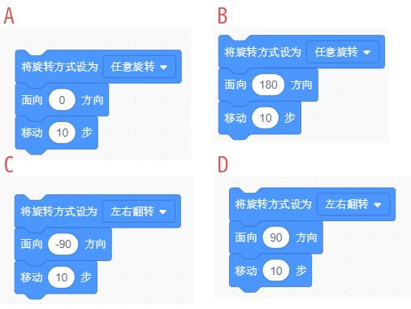
A.A
B.B
C.C
D.D
✔ 答案：A. A
解析：考点：「移动N步」沿角色当前朝向移动；改变x/y坐标只影响对应方向。本题正确答案为「A」。
Day1第2题默认的小猫有两个造型（分别为造型1和造型2）。在运行下面的程序后，没有看到造型的切换，下面哪一项可以修复这个问题？？
A.编辑小猫的造型
B.删除小猫的第一个造型：造型1
C.修改为
D.修改为
✔ 答案：D. 修改为
解析：考点：「下一个造型」循环切换，最后一个的下一个回到第一个。本题正确答案为「修改为」。
Day1第3题下面哪个区域是“舞台”？？
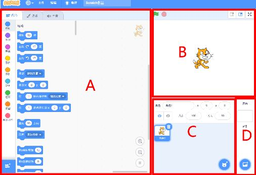
A.A
B.B
C.C
D.D
✔ 答案：B. B
解析：逐项分析各选项差异后，只有「B」符合题目要求，其余选项均与程序运行结果不符。
Day1第4题下面地图中每格的长度是50步长，小猫要想拿到苹果，下面哪组程序可以实现？？
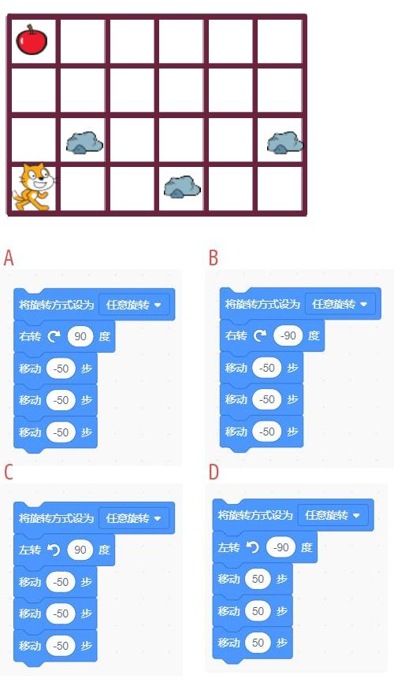
A.A
B.B
C.C
D.D
✔ 答案：A. A
解析：逐项分析各选项差异后，只有「A」符合题目要求，其余选项均与程序运行结果不符。
Day1第5题以下哪个可以实现小猫向上移动？？
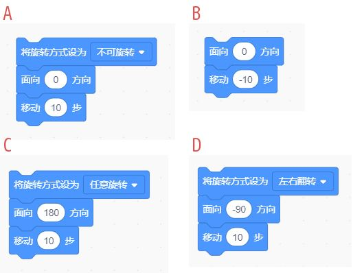
A.A
B.B
C.C
D.D
✔ 答案：A. A
解析：考点：「移动N步」沿角色当前朝向移动；改变x/y坐标只影响对应方向。本题正确答案为「A」。
Day1第6题下面地图中每格的长度是50步长，小猫要想拿到苹果，下面哪组程序可以实现？？
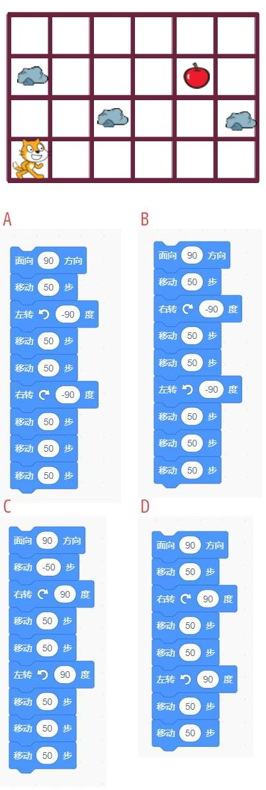
A.A
B.B
C.C
D.D
✔ 答案：A. A
解析：逐项分析各选项差异后，只有「A」符合题目要求，其余选项均与程序运行结果不符。
Day1第7题关于造型的说法正确的是？？
A.角色中有且只有一个造型
B.角色中必须有多个造型
C.角色中至少有一个造型
D.角色中可以没有造型
✔ 答案：C. 角色中至少有一个造型
解析：考点：「下一个造型」循环切换，最后一个的下一个回到第一个。本题正确答案为「角色中至少有一个造型」。
Day1第8题在下面图形基础上，只能移动一根火柴棍，不能变成下面哪个选项的图形？？
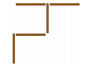
A.A
B.B
C.C
D.D
✔ 答案：A. A
解析：考点：「移动N步」沿角色当前朝向移动；改变x/y坐标只影响对应方向。本题正确答案为「A」。
Day1第9题以下哪组积木块可以实现播放4次声音“喵”？？
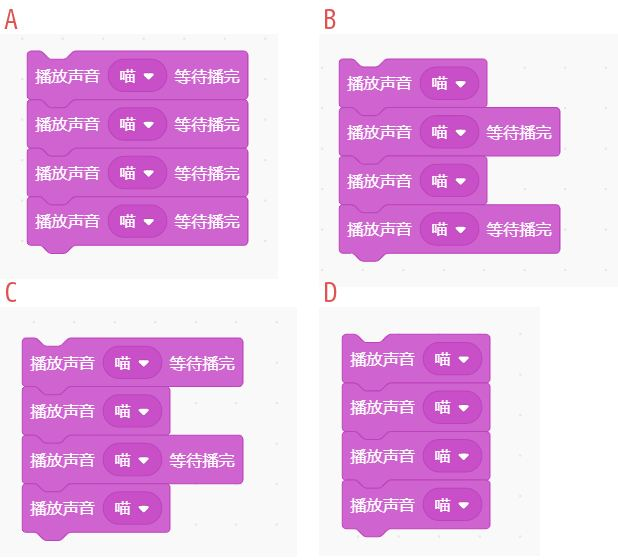
A.A
B.B
C.C
D.D
✔ 答案：A. A
解析：考点：「播放声音」不等待继续执行，「播放声音等待播完」要等声音结束。本题正确答案为「A」。
Day1第10题从背景库中选择一个背景，应该点击下面哪一个按钮？？
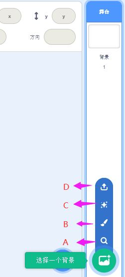
A.A
B.B
C.C
D.D
✔ 答案：A. A
解析：考点：背景和角色一样可以切换，用「换成…背景」或「下一个背景」。本题正确答案为「A」。
Day1第11题地图中每格的长度是50步长，小猫要想拿到苹果，下面哪组程序可以实现？？
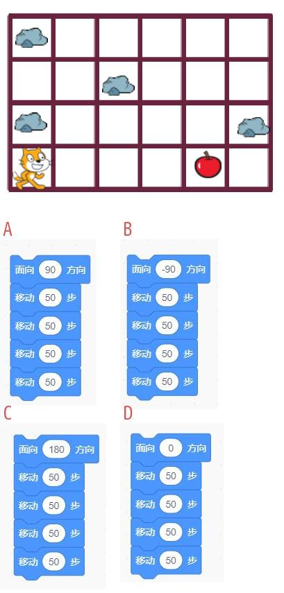
A.A
B.B
C.C
D.D
✔ 答案：A. A
解析：逐项分析各选项差异后，只有「A」符合题目要求，其余选项均与程序运行结果不符。
Day1第12题下图为造型的编辑界面，以下哪个可以实现变形功能？？
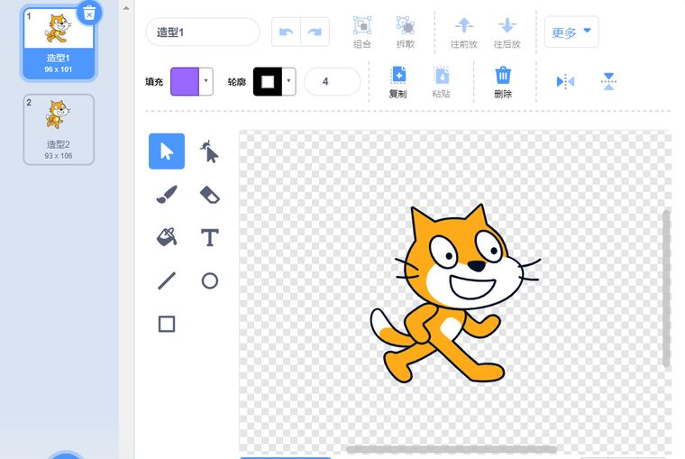
A.A
B.B
C.C
D.D
✔ 答案：A. A
解析：考点：「下一个造型」循环切换，最后一个的下一个回到第一个。本题正确答案为「A」。
Day1第13题想要录制一个声音，应该点击哪个按钮？？
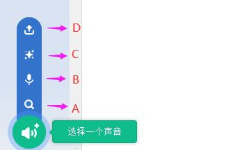
A.A
B.B
C.C
D.D
✔ 答案：A. A
解析：考点：「播放声音」不等待继续执行，「播放声音等待播完」要等声音结束。本题正确答案为「A」。
Day1第14题以下哪组积木块可以实现如下图小猫面向下移动？？
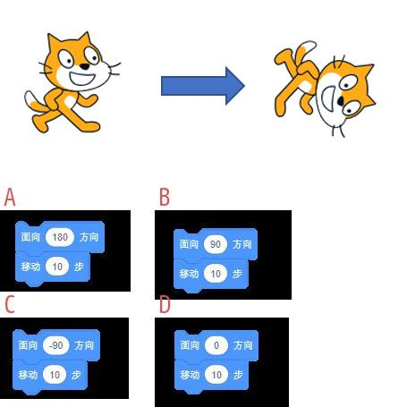
A.A
B.B
C.C
D.D
✔ 答案：A. A
解析：考点：「移动N步」沿角色当前朝向移动；改变x/y坐标只影响对应方向。本题正确答案为「A」。
Day1第15题小猫去学校一共有几条路径？？
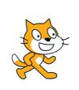
A.1
B.2
C.3
D.4
✔ 答案：C. 3
解析：逐项分析各选项差异后，只有「3」符合题目要求，其余选项均与程序运行结果不符。
Day1第16题以下哪组积木块可以实现如下图小猫面向上移动？？
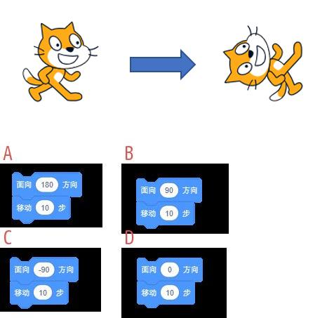
A.A
B.B
C.C
D.D
✔ 答案：A. A
解析：考点：「移动N步」沿角色当前朝向移动；改变x/y坐标只影响对应方向。本题正确答案为「A」。
Day1第17题下面哪个积木能够调节左右声道的音量？？
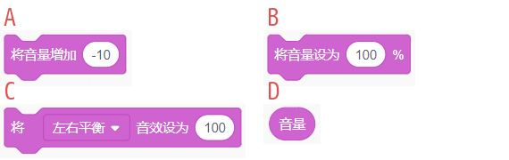
A.A
B.B
C.C
D.D
✔ 答案：A. A
解析：考点：「增加」负数即降低音量。本题正确答案为「A」。
Day1第18题当我们进行数学计算时，需要用到下面哪个模块中的积木？？
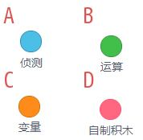
A.A
B.B
C.C
D.D
✔ 答案：A. A
解析：逐项分析各选项差异后，只有「A」符合题目要求，其余选项均与程序运行结果不符。
Day1第19题下面哪个区域是“背景区”？？
A.A
B.B
C.C
D.D
✔ 答案：D. D
解析：考点：背景和角色一样可以切换，用「换成…背景」或「下一个背景」。本题正确答案为「D」。
Day1第20题以下哪组积木块不能实现小猫最终方向为130度？？
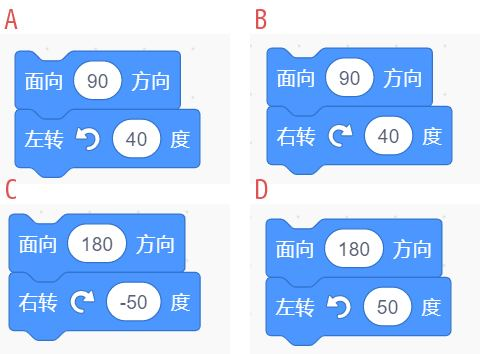
A.A
B.B
C.C
D.D
✔ 答案：A. A
解析：逐项分析各选项差异后，只有「A」符合题目要求，其余选项均与程序运行结果不符。
Day1第21题使用下图中哪个按钮可以添加新角色？？
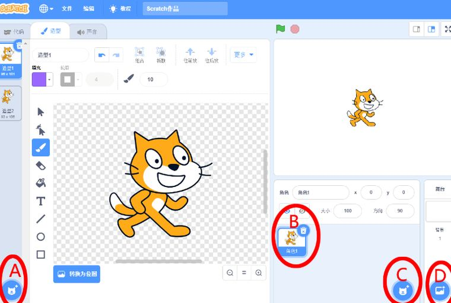
A.A
B.B
C.C
D.D
✔ 答案：C. C
解析：逐项分析各选项差异后，只有「C」符合题目要求，其余选项均与程序运行结果不符。
Day1第22题现在音量为100，不改变下面积木参数，哪个积木可以让音量小一点？？
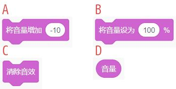
A.A
B.B
C.C
D.D
✔ 答案：A. A
解析：考点：「增加」负数即降低音量。本题正确答案为「A」。
Day1第23题现在有三个背景：“Mountain”、“Basketball 1”、“Colorful City”，下面哪个程序能够实现背景按顺序切换，在切换到Basketball 1背景时，小猫说“我喜欢打篮球2秒”，切换其他背景时小猫都不说话。？
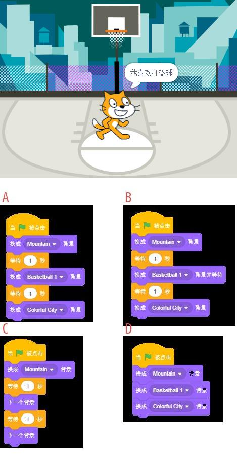
A.A
B.B
C.C
D.D
✔ 答案：A. A
解析：考点：背景和角色一样可以切换，用「换成…背景」或「下一个背景」。本题正确答案为「A」。
Day1第24题小猫初始方向如图1，小猫看到一个香蕉如图2，下面哪段程序执行后，可以让小猫拿到香蕉后如图3。（ ）图1 图2 图3？
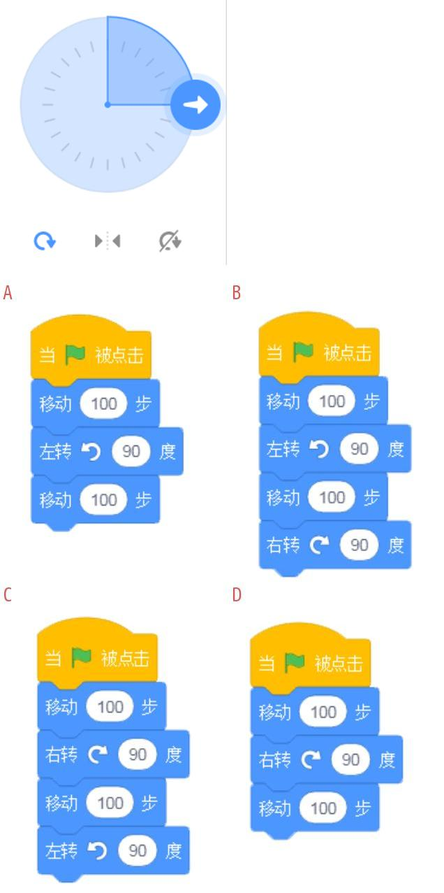
A.A
B.B
C.C
D.D
✔ 答案：A. A
解析：逐项分析各选项差异后，只有「A」符合题目要求，其余选项均与程序运行结果不符。
Day1第25题点击下面哪个图标可以使舞台区最大化？？
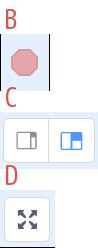
A.A
B.B
C.C
D.D
✔ 答案：A. A
解析：逐项分析各选项差异后，只有「A」符合题目要求，其余选项均与程序运行结果不符。
Day1第26题现在的音量为50，不改变积木的参数，下面哪个积木可以让音量大一些？？
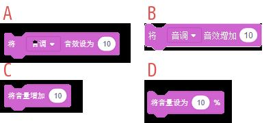
A.A
B.B
C.C
D.D
✔ 答案：A. A
解析：考点：「增加」负数即降低音量。本题正确答案为「A」。
Day1第27题每个方格的边长是30，下面哪个程序可以让青蛙抓住蝴蝶？？
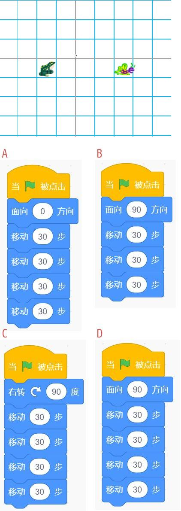
A.A
B.B
C.C
D.D
✔ 答案：A. A
解析：逐项分析各选项差异后，只有「A」符合题目要求，其余选项均与程序运行结果不符。
Day1第28题当前背景是第二个背景，不改变积木参数，下面哪个积木，可以换成下一个背景？？
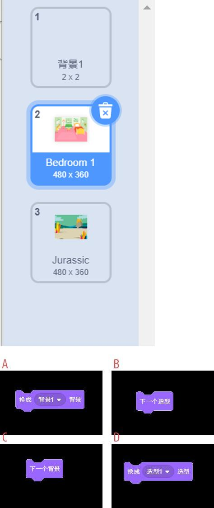
A.A
B.B
C.C
D.D
✔ 答案：A. A
解析：考点：背景和角色一样可以切换，用「换成…背景」或「下一个背景」。本题正确答案为「A」。
Day1第29题下面哪个积木可以让角色面向正上方？？
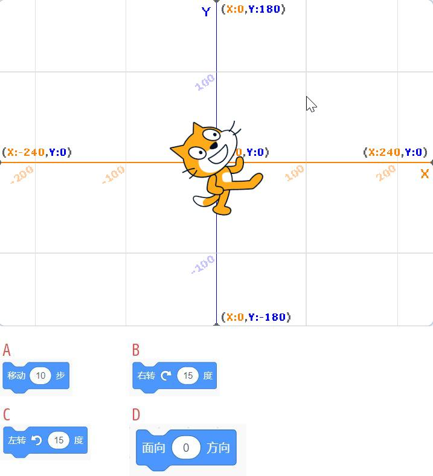
A.A
B.B
C.C
D.D
✔ 答案：A. A
解析：考点：方向规定：0=上，90=右，180=下，-90(270)=左。本题正确答案为「A」。
Day1第30题下面哪个程序不能让角色换成第三个造型？？
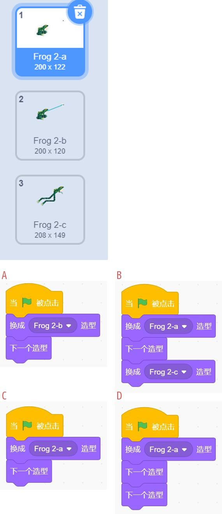
A.A
B.B
C.C
D.D
✔ 答案：A. A
解析：考点：「下一个造型」循环切换，最后一个的下一个回到第一个。本题正确答案为「A」。
Day1第31题小猫在舞台上左右来回走，使用下面哪种旋转方式最合适？？
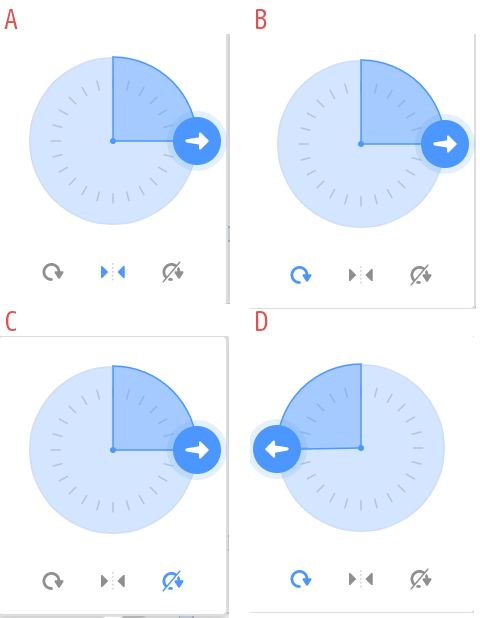
A.A
B.B
C.C
D.D
✔ 答案：A. A
解析：逐项分析各选项差异后，只有「A」符合题目要求，其余选项均与程序运行结果不符。
Day1第32题方格的边长为30，下面哪个程序可以让青蛙沿着箭头抓到蝴蝶？？
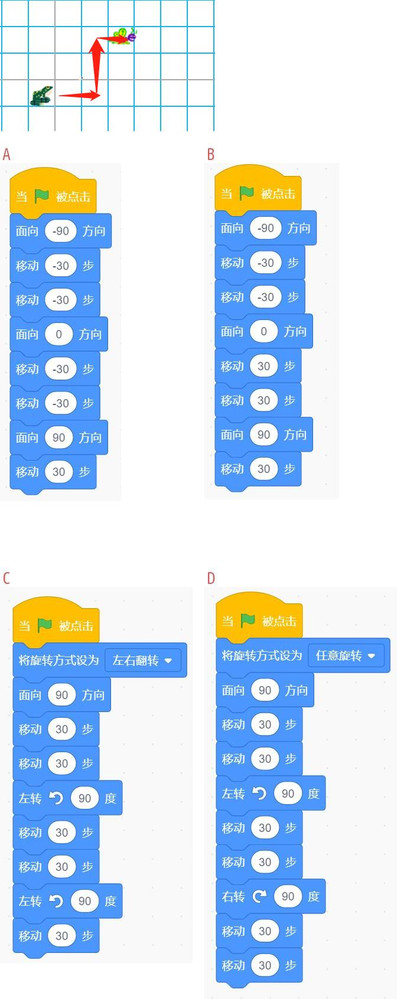
A.A
B.B
C.C
D.D
✔ 答案：A. A
解析：逐项分析各选项差异后，只有「A」符合题目要求，其余选项均与程序运行结果不符。
Day1第33题下面哪个积木可以获取当前背景的名称？？
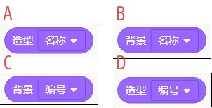
A.A
B.B
C.C
D.D
✔ 答案：A. A
解析：考点：背景和角色一样可以切换，用「换成…背景」或「下一个背景」。本题正确答案为「A」。
Day1第34题下图中“？”位置，应该填入的图形是？？
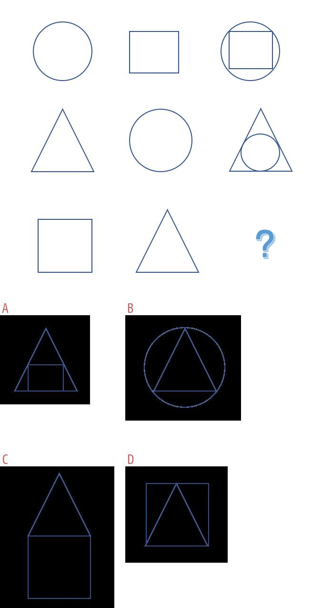
A.A
B.B
C.C
D.D
✔ 答案：A. A
解析：逐项分析各选项差异后，只有「A」符合题目要求，其余选项均与程序运行结果不符。
Day1第35题小明想实现小女孩跳芭蕾舞的动画，但程序执行后没有看到小女孩动作变化，用下面哪个方法可以帮助他实现正确的效果？？
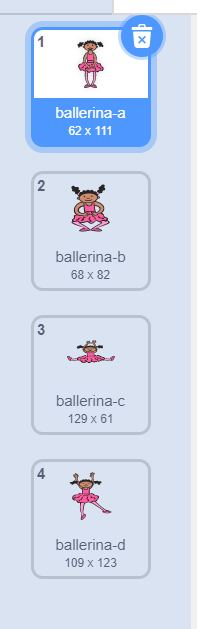
A.造型太少，需要多复制几个造型
B.在切换造型和下一个造型积木后面加入等待时间
C.上下拖动造型，重新给造型排序
D.造型太多，需要删除一些造型
✔ 答案：B. 在切换造型和下一个造型积木后面加入等待时间
解析：逐项分析各选项差异后，只有「在切换造型和下一个造型积木后面加入等待时间」符合题目要求，其余选项均与程序运行结果不符。
Day1第36题下图中哪个按钮可以实现填充颜色？？
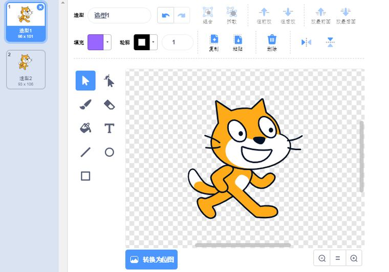
A.A
B.B
C.C
D.D
✔ 答案：A. A
解析：考点：「碰到颜色」积木需要先取色（点击色块用取色器吸取），检测角色是否碰到指定颜色，常用于碰撞检测。本题正确答案为「A」。
Day1第37题下面哪个积木可以让角色左右运动时不倒立？？
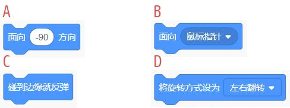
A.A
B.B
C.C
D.D
✔ 答案：A. A
解析：逐项分析各选项差异后，只有「A」符合题目要求，其余选项均与程序运行结果不符。
Day1第38题下图中哪个按钮可以上传声音？？
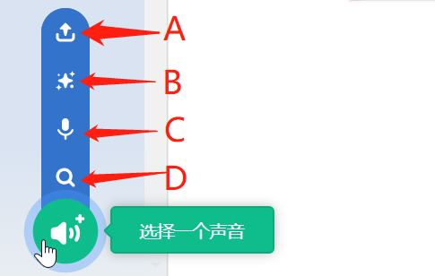
A.A
B.B
C.C
D.D
✔ 答案：A. A
解析：考点：「播放声音」不等待继续执行，「播放声音等待播完」要等声音结束。本题正确答案为「A」。
Day1第39题下面哪个区域是“舞台区”？？
A.A
B.B
C.C
D.D
✔ 答案：B. B
解析：逐项分析各选项差异后，只有「B」符合题目要求，其余选项均与程序运行结果不符。
Day1第40题下面哪段程序可以随机切换三个背景？？
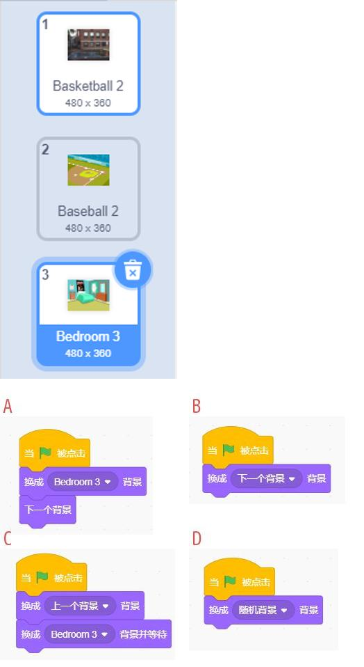
A.A
B.B
C.C
D.D
✔ 答案：A. A
解析：考点：「在A和B之间取随机数」返回[A,B]内的整数，含两端。本题正确答案为「A」。
Day1第41题下面哪个程序可以切换成第4个背景？？
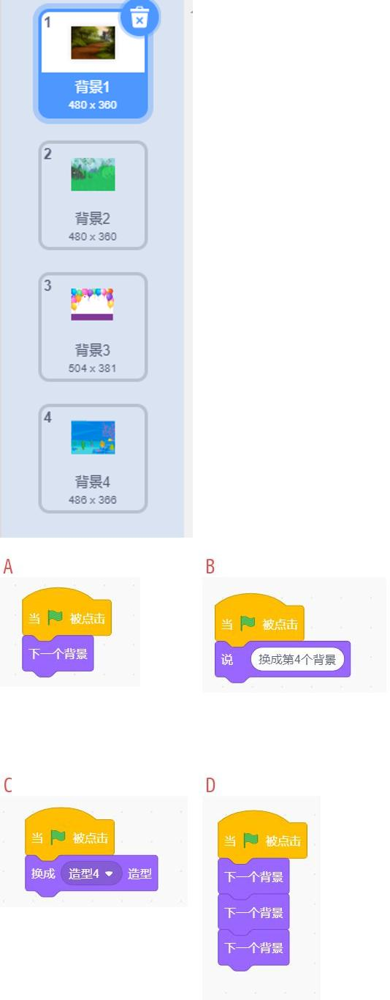
A.A
B.B
C.C
D.D
✔ 答案：A. A
解析：考点：背景和角色一样可以切换，用「换成…背景」或「下一个背景」。本题正确答案为「A」。
Day1第42题下图为小猫的初始方向，哪个积木可以让小猫面向正右方？？
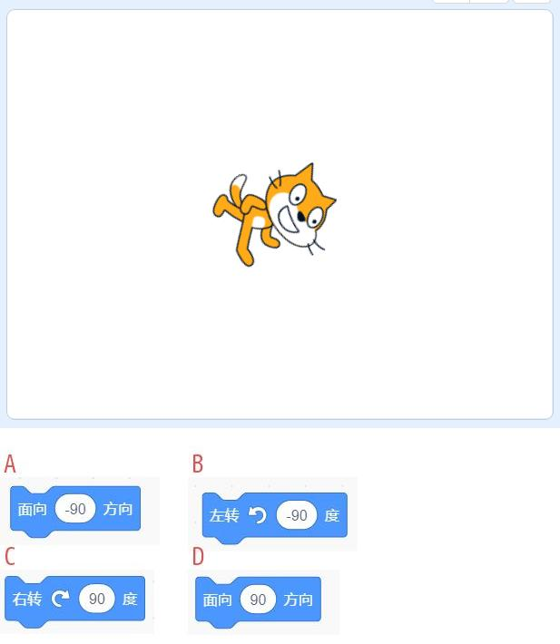
A.A
B.B
C.C
D.D
✔ 答案：A. A
解析：考点：方向规定：0=上，90=右，180=下，-90(270)=左。本题正确答案为「A」。
Day1第43题下面哪个积木可以使小猫的面向方向由右转向左？？
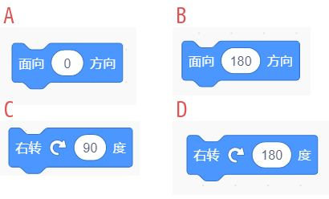
A.A
B.B
C.C
D.D
✔ 答案：A. A
解析：考点：方向规定：0=上，90=右，180=下，-90(270)=左。本题正确答案为「A」。
Day1第44题小猫在近处，小狗在远处，在不改变音量的情况下，使用哪个按钮，能让小狗叫的声音变小？？
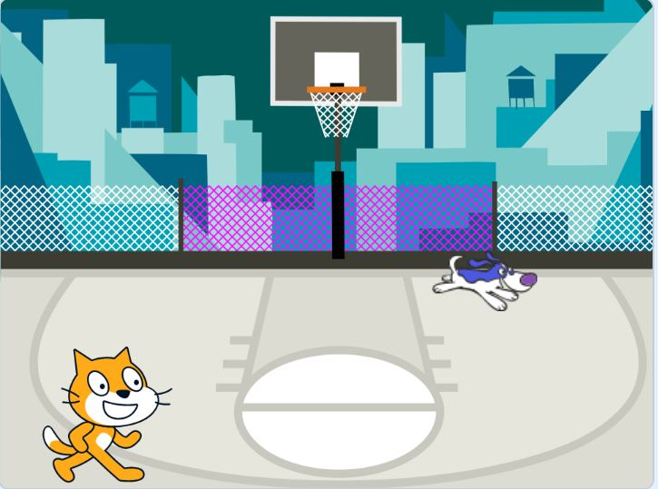
A.A
B.B
C.C
D.D
✔ 答案：A. A
解析：考点：「播放声音」不等待继续执行，「播放声音等待播完」要等声音结束。本题正确答案为「A」。
Day1第45题下面哪个积木可以使角色“说”一些内容，并且说的内容不会自动消失？？
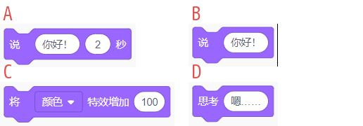
A.A
B.B
C.C
D.D
✔ 答案：A. A
解析：考点：「说…2秒」说完自动收起气泡；「说…」气泡一直显示。本题正确答案为「A」。
Day1第46题下面哪个积木可以使音调变高？？
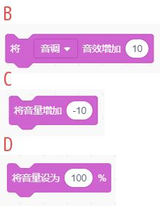
A.A
B.B
C.C
D.D
✔ 答案：A. A
解析：考点：「将音调增加」正值变高、负值变低。音调影响声音的高低，不影响音量。 本题正确答案为「A」。
Day1第47题下图中哪个按钮可以添加新背景？？
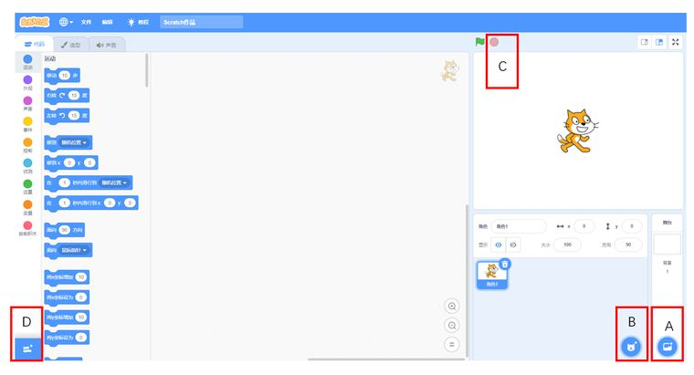
A.A
B.B
C.C
D.D
✔ 答案：A. A
解析：考点：背景和角色一样可以切换，用「换成…背景」或「下一个背景」。本题正确答案为「A」。
Day1第48题执行下面哪段程序可以让小猫移到苹果所在的位置？？
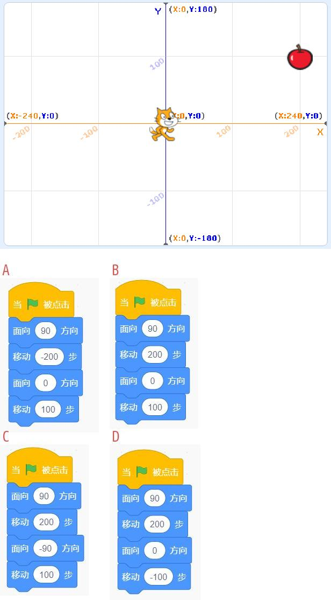
A.A
B.B
C.C
D.D
✔ 答案：A. A
解析：逐项分析各选项差异后，只有「A」符合题目要求，其余选项均与程序运行结果不符。
Day1第49题下面哪个积木可以使角色换成下一个造型？ ？
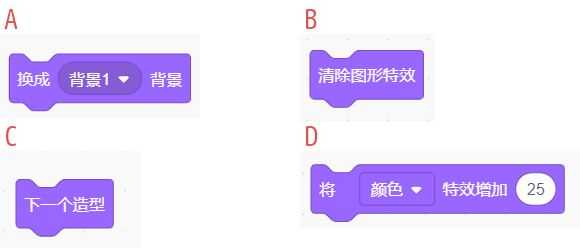
A.A
B.B
C.C
D.D
✔ 答案：A. A
解析：考点：「下一个造型」循环切换，最后一个的下一个回到第一个。本题正确答案为「A」。
Day1第50题下面哪个程序可以实现小猫一面唱歌一面左右摇摆？？
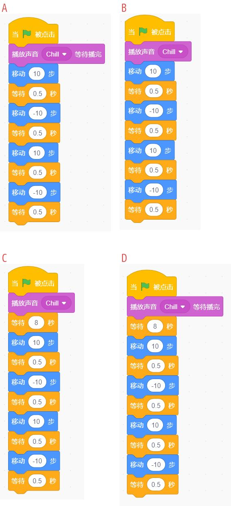
A.A
B.B
C.C
D.D
✔ 答案：A. A
解析：逐项分析各选项差异后，只有「A」符合题目要求，其余选项均与程序运行结果不符。
Day1第51题下面左图为小猫初始位置，旋转方式为任意旋转，执行下面哪段程序可以达到右图所示的效果？？
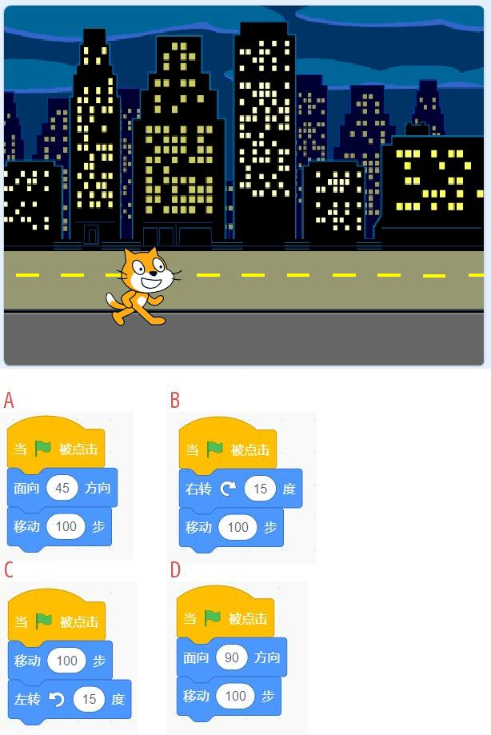
A.A
B.B
C.C
D.D
✔ 答案：A. A
解析：逐项分析各选项差异后，只有「A」符合题目要求，其余选项均与程序运行结果不符。
Day1第52题小猫有4个造型（依次为造型1，造型2，造型3，造型4），执行下面这段程序后，小猫的造型编号是？ ？
A.1
B.2
C.3
D.4
✔ 答案：A. 1
解析：考点：「下一个造型」循环切换，最后一个的下一个回到第一个。本题正确答案为「1」。
Day1第53题下面哪个积木可以让角色切换到指定的一个造型？？
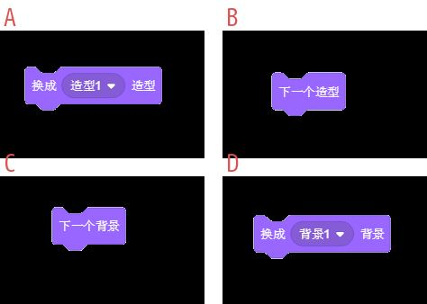
A.A
B.B
C.C
D.D
✔ 答案：A. A
解析：考点：「下一个造型」循环切换，最后一个的下一个回到第一个。本题正确答案为「A」。
Day1第54题执行下面程序，小猫共走了多少步？？
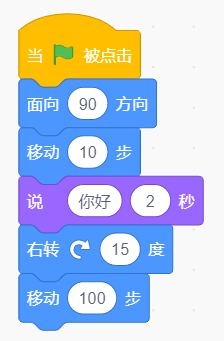
A.115
B.100
C.110
D.200
✔ 答案：C. 110
解析：逐项分析各选项差异后，只有「110」符合题目要求，其余选项均与程序运行结果不符。
Day1第55题默认小猫角色，不改变造型，下面哪组积木可以实现小猫倒立？？
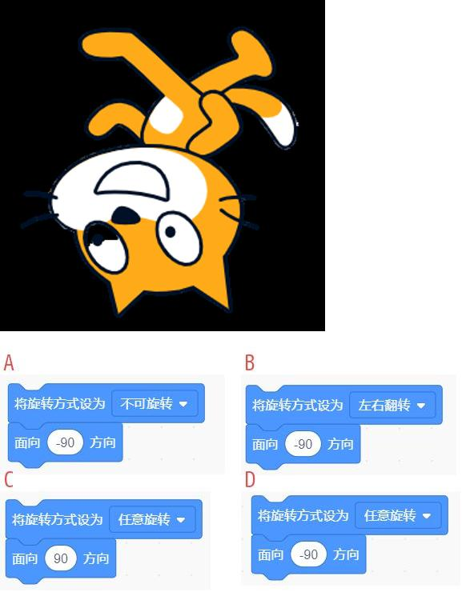
A.A
B.B
C.C
D.D
✔ 答案：A. A
解析：考点：「下一个造型」循环切换，最后一个的下一个回到第一个。本题正确答案为「A」。
Day1第56题小猫有4个造型（依次为造型1、造型2、造型3、造型4），现在默认是造型2，下面哪段程序，可以将小猫变成造型1？ ？
A.A
B.B
C.C
D.D
✔ 答案：A. A
解析：考点：「下一个造型」循环切换，最后一个的下一个回到第一个。本题正确答案为「A」。
Day1第57题下面哪组积木可以让小猫最终面向100度？？
A.A
B.B
C.C
D.D
✔ 答案：A. A
解析：二、判断题(共10题，每题2分，共20分)
Day1第58题角色初始位置坐标是（0,0），执行下面程序后，角色会出现在什么位置上？？
A.x坐标为10，y坐标为50
B.x坐标为40，y坐标为50
C.x坐标为50，y坐标为40
D.x坐标为30，y坐标为50
✔ 答案：B. x坐标为40，y坐标为50
解析：考点：x轴向右为正（-240~240），y轴向上为正（-180~180），原点在舞台中心。本题正确答案为「x坐标为40，y坐标为50」。
Day1第59题执行下面程序后，按一次→键，兔子会？？
A.向右移动10步
B.向左移动10步
C.向上移动10步
D.向下移动10步
✔ 答案：A. 向右移动10步
解析：逐项分析各选项差异后，只有「向右移动10步」符合题目要求，其余选项均与程序运行结果不符。
Day1第60题黑兔、灰兔和白兔三只兔子在赛跑。黑免说：“我跑得不是最快的，但比白兔快。”下面说法正确的是？？
A.黑兔第一，灰兔第二、白兔第三
B.灰兔第一，黑兔第二、白兔第三
C.白兔第一，灰兔第二、黑兔第三
D.白兔第一，黑兔第二、灰兔第三
✔ 答案：B. 灰兔第一，黑兔第二、白兔第三
解析：考点：「说…2秒」说完自动收起气泡；「说…」气泡一直显示。本题正确答案为「灰兔第一，黑兔第二、白兔第三」。
Day1第61题按照图中规则，在下列选项中找出所对应的图形。？
A.A
B.B
C.C
D.D
✔ 答案：A. A
解析：逐项分析各选项差异后，只有「A」符合题目要求，其余选项均与程序运行结果不符。
Day1第62题下面流程图可以用哪个积木实现？？
A.A
B.B
C.C
D.D
✔ 答案：A. A
解析：逐项分析各选项差异后，只有「A」符合题目要求，其余选项均与程序运行结果不符。
Day1第63题下面积木运行结果是？？
A.pp
B.ap
C.np
D.pn
✔ 答案：D. pn
解析：逐项分析各选项差异后，只有「pn」符合题目要求，其余选项均与程序运行结果不符。
Day1第64题下面哪个按钮，可以让声音变大一点儿？？
A.A
B.B
C.C
D.D
✔ 答案：A. A
解析：考点：「播放声音」不等待继续执行，「播放声音等待播完」要等声音结束。本题正确答案为「A」。
Day1第65题现在红绿灯的状态为绿灯，执行程序20秒后是什么灯亮？？
A.红灯亮
B.绿灯亮
C.红灯绿灯都不亮
D.红灯绿灯一起亮
✔ 答案：B. 绿灯亮
解析：逐项分析各选项差异后，只有「绿灯亮」符合题目要求，其余选项均与程序运行结果不符。
Day1第66题一朵乌云飘在空中，点击绿旗，乌云角色将有什么变化？？
A.乌云消失
B.乌云没有变化
C.乌云变多
D.乌云颜色变深了
✔ 答案：A. 乌云消失
解析：逐项分析各选项差异后，只有「乌云消失」符合题目要求，其余选项均与程序运行结果不符。
Day1第67题积木的颜色和红灯颜色一致，点击绿旗后，女孩会？？
A.女孩说“红灯停”
B.移动10步
C.向左转弯
D.向右转弯
✔ 答案：A. 女孩说“红灯停”
解析：考点：「碰到颜色」积木需要先取色（点击色块用取色器吸取），检测角色是否碰到指定颜色，常用于碰撞检测。本题正确答案为「女孩说“红灯停”」。
Day1第68题对于默认的小猫角色，执行下面程序，说法错误的是？？
A.不按下空格键，小猫会随机移动
B.不按下空格键，小猫会逐渐变大
C.不按下空格键，小猫会切换造型
D.当按下空格键，小猫一直移动
✔ 答案：D. 当按下空格键，小猫一直移动
解析：考点：「说…2秒」说完自动收起气泡；「说…」气泡一直显示。本题正确答案为「当按下空格键，小猫一直移动」。
Day1第69题按照图中规则，第四个图形应该填入什么数字？？
A.左：18，右：27
B.左：10，右：15
C.左：27，右：27
D.左：9，右：27
✔ 答案：A. 左：18，右：27
解析：逐项分析各选项差异后，只有「左：18，右：27」符合题目要求，其余选项均与程序运行结果不符。
Day1第70题执行下面程序，字母B将会有什么变化？？
A.字母B变换颜色闪烁
B.字母B最后消失不见
C.字母B只剩轮廓
D.字母B没有变化
✔ 答案：A. 字母B变换颜色闪烁
解析：逐项分析各选项差异后，只有「字母B变换颜色闪烁」符合题目要求，其余选项均与程序运行结果不符。
Day1第71题气球当前大小为40，只点击一次绿旗，气球角色的大小将变为多少？？
A.50
B.60
C.70
D.80
✔ 答案：C. 70
解析：考点：「设为」是绝对设置，「增加」是在当前值基础上变化。本题正确答案为「70」。
Day1第72题蜻蜓正在天空飞行，积木 的颜色和绿树的颜色是一样的，运行以下哪个程序可以让蜻蜓飞到绿树上，并且停止飞行？？
A.A
B.B
C.C
D.D
✔ 答案：A. A
解析：考点：「碰到颜色」积木需要先取色（点击色块用取色器吸取），检测角色是否碰到指定颜色，常用于碰撞检测。本题正确答案为「A」。
Day1第73题下面流程图可以用哪个积木实现？？
A.A
B.B
C.C
D.D
✔ 答案：A. A
解析：逐项分析各选项差异后，只有「A」符合题目要求，其余选项均与程序运行结果不符。
Day1第74题下面程序中“？”处填写哪个数字可以让角色发出喵的声音？？
A.44
B.15
C.88
D.23
✔ 答案：C. 88
解析：考点：「播放声音」不等待继续执行，「播放声音等待播完」要等声音结束。本题正确答案为「88」。
Day1第75题关于广播消息，以下说法正确的是？？
A.只有角色，可以通过“广播消息”积木，向其他角色或是背景发送消息
B.只有背景，可以通过“广播消息”积木，向其他角色或是背景发送消息
C.背景和角色，都可以通过“广播消息”积木，向其他角色或是背景发送消息
D.背景不能通过“广播消息”积木，向其他角色发送消息
✔ 答案：C. 背景和角色，都可以通过“广播消息”积木，向其他角色或是背景发送消息
解析：考点：广播用于角色间通信，发送方用「广播」，接收方用「当接收到…」。本题正确答案为「背景和角色，都可以通过“广播消息”积木，向其他角色或是背景发送消息」。
Day1第76题以下说法不正确的是？？
A.“全部清除”积木可以清除角色绘制出的所有图案
B.“全部清除”积木可以清除舞台区的背景图案
C.“全部清除”积木可以清除舞台区的图章
D.“全部清除”积木不可以改变角色的位置
✔ 答案：B. “全部清除”积木可以清除舞台区的背景图案
解析：考点：「说…2秒」说完自动收起气泡；「说…」气泡一直显示。本题正确答案为「“全部清除”积木可以清除舞台区的背景图案」。
Day1第77题执行下面程序后，在舞台区能看到几个角色？ ？
A.无数个
B.1个
C.10个
D.100个
✔ 答案：B. 1个
解析：考点：克隆体会复制本体全部特征，每执行一次「克隆」多一个分身；注意本体也算一只。本题正确答案为「1个」。
Day1第78题执行下面程序，以下选项正确的是？？
A.只显示角色自己
B.只显示角色的克隆体
C.显示角色自己及克隆体
D.没有显示
✔ 答案：C. 显示角色自己及克隆体
解析：逐项分析各选项差异后，只有「显示角色自己及克隆体」符合题目要求，其余选项均与程序运行结果不符。
Day1第79题执行下面程序，舞台上的角色会？？
A.从右向左不停移动
B.从左向右不停移动
C.从上到下垂直移动
D.水平方向来回移动
✔ 答案：B. 从左向右不停移动
解析：逐项分析各选项差异后，只有「从左向右不停移动」符合题目要求，其余选项均与程序运行结果不符。
Day1第80题执行以下程序，角色在舞台区行走的最长距离？？
A.不会大于240步
B.不会大于360步
C.不会大于480步
D.有可能大于480步
✔ 答案：D. 有可能大于480步
解析：逐项分析各选项差异后，只有「有可能大于480步」符合题目要求，其余选项均与程序运行结果不符。
Day1第81题下面积木的值不可能是？？
A.0
B.9
C.15
D.21
✔ 答案：D. 21
解析：考点：按积木运算顺序从里往外计算，一层层算出结果。 本题正确答案为「21」。
Day1第82题下面表述正确的是？？
A.变量a控制行数，变量b控制每行个数
B.变量b控制列数，变量a控制每行个数
C.变量a、b同时控制每行个数，仅变量a控制列数
D.变量a、b同时控制每个数，仅变量b控制列数
✔ 答案：A. 变量a控制行数，变量b控制每行个数
解析：根据脚本可以看出a不变，b不断增加
Day1第83题角色的初始大小为100， 点击一次绿旗，下面说法正确的是？？
A.角色不碰到鼠标大小为100
B.角色碰到鼠标大小不变，大小为100
C.碰到或者不碰到鼠标，角色大小始终不会发生变化
D.角色碰到边缘大小也会发生变化
✔ 答案：A. 角色不碰到鼠标大小为100
解析：考点：「设为」是绝对设置，「增加」是在当前值基础上变化。本题正确答案为「角色不碰到鼠标大小为100」。
Day1第84题小猫的初始方向和鼠标的位置如下图所示，下面哪个积木可以让角色面向正右方？？
A.A
B.B
C.C
D.D
✔ 答案：A. A
解析：考点：方向规定：0=上，90=右，180=下，-90(270)=左。本题正确答案为「A」。
Day1第85题当前篮球角色坐标为(10,-110)，篮筐坐标为(10,130)，执行程序后按下哪个按键可以让篮球移动到篮筐中？？
A.按空格键
B.按↑键
C.按↓键
D.按任意键
✔ 答案：B. 按↑键
解析：考点：x轴向右为正（-240~240），y轴向上为正（-180~180），原点在舞台中心。本题正确答案为「按↑键」。
Day1第86题下面哪个积木运行结果是true？？
A.A
B.B
C.C
D.D
✔ 答案：A. A
解析：逐项分析各选项差异后，只有「A」符合题目要求，其余选项均与程序运行结果不符。
Day1第87题点击绿旗，鼠标碰到小象但是不按下鼠标键，小象角色会发生什么变化？？
A.小象没变化
B.小象换成elephant-b造型
C.小象消失了
D.小象换成elephant-b背景
✔ 答案：A. 小象没变化
解析：考点：侦测积木返回真/假，需要配合「如果…那么」和「重复执行」使用。本题正确答案为「小象没变化」。
Day1第88题下图红框中产生的随机数是50，那么下面程序执行的结果为？？
A.优秀！
B.努力！
C.无任何反应。
D.优秀！努力！
✔ 答案：A. 优秀！
解析：考点：「在A和B之间取随机数」返回[A,B]范围内的整数，包含两端。本题正确答案为「优秀！」。
Day1第89题十个抽奖号码随机选三个，且选中的三个号码不能重复，下面程序中“重复执行直到……”的判断条件是？？
A.A
B.B
C.C
D.D
✔ 答案：A. A
解析：三个数不能重复，则需要判断三个数是否分别相等，即（中奖号码1=中奖号码2）不成立，（中奖号码2=中奖号码3）不成立，（中奖号码1=中奖号码3）不成立，且三个条件同时成立，使用“与”运算
Day1第90题小猫的程序如下图所示，苹果没有程序。以下表述正确的是？？
A.只有一个苹果
B.有6个苹果，重叠在一起
C.有6个苹果，排成一行
D.有5个苹果，排成一行
✔ 答案：B. 有6个苹果，重叠在一起
解析：克隆了5个苹果，加上一个苹果角色共6个，苹果角色没有脚本，克隆体也没有脚本，所以不会移动，都重叠在一起。
Day1第91题下图为角色气球的程序，表述正确的是？？
A.所有气球的造型都在变化
B.所有气球的造型都一直不变
C.有3个气球的造型一直不变，有1个气球的造型会变化
D.有1个气球的造型一直不变，有3个气球的造型会变化
✔ 答案：D. 有1个气球的造型一直不变，有3个气球的造型会变化
解析：只有克隆体的脚本才有变换造型的积木，共克隆了3个克隆体。
Day1第92题下面哪个区域是角色列表区？？
A.A
B.B
C.C
D.D
✔ 答案：C. C
解析：考点：列表像有多个抽屉的柜子，从第1项开始编号；「项目数」返回列表长度。本题正确答案为「C」。
Day1第93题角色列表区如下图所示，舞台上角色显示正确的是？？
A.A
B.B
C.C
D.D
✔ 答案：A. A
解析：考点：列表像有多个抽屉的柜子，从第1项开始编号；「项目数」返回列表长度。本题正确答案为「A」。
Day1第94题执行下面程序，当“我的变量”变成5时，花费的时间是？？
A.1秒
B.5秒
C.6秒
D.4秒
✔ 答案：B. 5秒
解析：考点：变量是存储数据的容器，可存数字/字符串/布尔值；「设为」直接赋值，「增加」在原值上加减。本题正确答案为「5秒」。
Day1第95题小球程序如下图所示，执行程序表述正确的是？？
A.小球一直在移动
B.小球一直静止
C.小球移动越来越慢，最后停止
D.小球移动越来越快
✔ 答案：C. 小球移动越来越慢，最后停止
解析：脚本中循环次数有限，有移动也有停止，因此A、B不正确。变量是不断增大的，移动的步数则使用15减去变量值，因此移动步数是减小的，所以运动是越来越慢。
Day1第96题给“角色1”新建一个仅适用于当前角色的变量，复制“角色1”， 生成一个新角色“角色2”，下列表述正确的是？？
A.该变量变成适用于所有角色的变量
B.两个角色各有一个仅适用于自己的变量，且两个变量重名
C.该变量变成仅适用于角色2的变量
D.该变量变成仅适用于舞台的变量
✔ 答案：B. 两个角色各有一个仅适用于自己的变量，且两个变量重名
解析：局域变量复制到其它角色中，仍然是局域变量，只是适用的角色换成了新的。
Day1第97题执行下面程序，变量“数2”显示值是？？
A.13
B.21
C.34
D.55
✔ 答案：C. 34
解析：考点：变量是存储数据的容器，可存数字/字符串/布尔值；「设为」直接赋值，「增加」在原值上加减。本题正确答案为「34」。
Day1第98题执行下面程序，变量C的值是？？
A.8
B.6
C.14
D.A+B
✔ 答案：C. 14
解析：考点：变量是存储数据的容器，可存数字/字符串/布尔值；「设为」直接赋值，「增加」在原值上加减。本题正确答案为「14」。
Day1第99题执行下面程序，变量“和”显示的值是？？
A.0
B.5
C.10
D.15
✔ 答案：C. 10
解析：考点：变量是存储数据的容器，可存数字/字符串/布尔值；「设为」直接赋值，「增加」在原值上加减。本题正确答案为「10」。
Day1第100题执行下面程序，变量“数”和“计数”的值是？？
A.20 4
B.20 5
C.25 4
D.25 5
✔ 答案：D. 25 5
解析：考点：变量是存储数据的容器，可存数字/字符串/布尔值；「设为」直接赋值，「增加」在原值上加减。本题正确答案为「25 5」。
Day1第101题执行下面程序，变量C的值是？？
A.1至100之间的随机数
B.1至10之间的随机数
C.1至20之间的随机数
D.2至20之间的随机数
✔ 答案：A. 1至100之间的随机数
解析：考点：变量是存储数据的容器，可存数字/字符串/布尔值；「设为」直接赋值，「增加」在原值上加减。本题正确答案为「1至100之间的随机数」。
Day1第102题执行下面程序，“变量2”的取值范围是？？
A.0至50，包含0和50
B.0至变量1的数值，包含0和变量1的数值
C.0和1，包含0和1
D.0至10，包含0和10
✔ 答案：C. 0和1，包含0和1
解析：关系运算积木成立时为1，不成立时为0，因此生成随机数的范围只是0和1
Day1第103题角色气球的程序如下图所示，表述错误的是？？
A.气球每滑行一次变量增加1，变量变为10后停止
B.气球滑行位置是不确定的，滑行10次后会停止
C.气球一直滑行，变量一直增加
D.气球角色发出广播，又接收处理这个广播
✔ 答案：C. 气球一直滑行，变量一直增加
解析：当变量达到10时，条件满足，则运行停止全部脚本的积木
Day1第104题点击下图中哪个按钮可以绘制新背景？？
A.A
B.B
C.C
D.D
✔ 答案：C. C
解析：考点：背景和角色一样可以切换，用「换成…背景」或「下一个背景」。本题正确答案为「C」。
Day1第105题下面哪个程序可以将画笔的颜色设置为红色，画笔的粗细设置为10？？
A.A
B.B
C.C
D.D
✔ 答案：A. A
解析：考点：画笔使用流程：全部擦除→设置颜色粗细→落笔→移动绘制→抬笔；画正多边形每次转角=360÷边数。本题正确答案为「A」。
Day1第106题下面程序会绘制出什么图形？？
A.三角形
B.圆形
C.正方形
D.五角星
✔ 答案：C. 正方形
解析：二、判断题(共10题，每题2分，共20分)
Day1第107题角色初始方向为90，只考虑形状，下面程序绘制的图案是？？
A.A
B.B
C.C
D.D
✔ 答案：A. A
解析：画出A、C选项只需要固定转动一个角度就可以，画出B选项则需要循环6次。
Day1第108题执行下面程序，绘制的图形是？？
A.A
B.B
C.C
D.D
✔ 答案：A. A
解析：逐项分析各选项差异后，只有「A」符合题目要求，其余选项均与程序运行结果不符。
Day1第109题想给项目添加一个新角色，应该点击哪个按钮？
A.舞台左下角的『添加角色』按钮
B.造型页面的『编辑』（切换角色外观）
C.声音页面的『录制』（控制声音效果）
D.脚本区的空白处双击，实际上做不到
✔ 答案：A. 舞台左下角的『添加角色』按钮
解析：角色列表区右下角（或左下角）有『添加角色』按钮，点击后可从素材库选择新角色。
Day1第110题要让角色在舞台上消失，应该使用外观模块的哪个积木？
A.删除此克隆体
B.隐藏
C.移到最前面
D.下一个造型
✔ 答案：B. 隐藏
解析：『隐藏』让角色从舞台消失（角色还在角色列表里）；『显示』让它重新出现。
Day1第111题【真题】运行图中的程序，程序什么时候停止？
A.移动 10 步后
B.碰到舞台边缘时
C.永远不会停止
D.点击角色时
✔ 答案：B. 碰到舞台边缘时
解析：角色一直移动，每圈检测『碰到舞台边缘』，碰到就执行『停止全部脚本』。
Day1第112题『说 你好！ 2秒』与『说 你好！』的区别是？
A.没有区别，两者可以随意替换
B.前者说完 2 秒后气泡自动消失，后者的气泡一直显示
C.前者说话声音更大，后者没有声音（控制声音效果）
D.前者是思考，后者是说话（外观展示效果）
✔ 答案：B. 前者说完 2 秒后气泡自动消失，后者的气泡一直显示
解析：带秒数的『说』在指定时间后自动收起气泡；不带秒数的『说』气泡会一直留在舞台上。
Day1第113题『将大小设为 100』与『将大小增加 10』的区别是？
A.没有区别，两者可以随意替换
B.『设为』直接把大小改成指定值，『增加』在当前基础上变化
C.『增加』每执行一次都把大小变成 10（外观展示效果）
D.两者都会清零，这个理解有偏差
✔ 答案：B. 『设为』直接把大小改成指定值，『增加』在当前基础上变化
解析：『设为』是绝对设置（无论原来是多少都变成该值）；『增加』是相对变化（原值±数值）。
Day1第114题【真题】图中积木执行后，谁会做出反应？
A.只有写『当接收到 开场』的角色
B.所有角色
C.只有背景
D.没有角色反应
✔ 答案：A. 只有写『当接收到 开场』的角色
解析：广播发出后，写了『当接收到 开场』脚本的角色（含舞台）才会执行对应代码。
Day1第115题下列哪个是『播放声音 喵』和『播放声音 喵 等待播完』的区别？
A.没有区别，两者可以随意替换，具体情况要看使用场景
B.前者不等待声音播完就继续执行后面的代码，后者要等播完才继续
C.后者的音量更大，听起来更响（控制声音效果），具体情况要看使用场景
D.前者会循环播放，永远停不下来，这个理解有偏差
✔ 答案：B. 前者不等待声音播完就继续执行后面的代码，后者要等播完才继续
解析：『等待播完』会阻塞脚本直到声音结束；不等待的版本声音和后面的代码同时进行。
Day1第116题【真题】运行图中的程序，角色最后的大小是多少？
A.60
B.80
C.100
D.120
✔ 答案：C. 100
解析：先设为 60，再连续增加两次 20：60+20+20=100。『设为』定值、『增加』累加。
Day1第117题『将 x 坐标增加 -10』会让角色？
A.向右移动，因为数字变大了
B.向左移动
C.向上移动，和 y 坐标一样
D.向下移动，负数代表向下
✔ 答案：B. 向左移动
解析：增加负数即减小 x，角色向左移动 10。
Day1第118题『移到 x:0 y:0』和『在1秒内滑行到 x:0 y:0』的区别是？
A.没有区别，最终都到达同一个位置，两者可以随意替换
B.『移到』瞬间到达，『滑行』用指定时间平滑移动过去
C.『滑行』更快，直接冲刺过去（改变位置或方向）
D.『移到』会先经过屏幕中间再到达，这种说法不准确
✔ 答案：B. 『移到』瞬间到达，『滑行』用指定时间平滑移动过去
解析：『移到』是瞬移；『滑行』按给定时间匀速移动，可以看到移动过程。
Day1第119题『移动 100 步』是朝哪个方向移动？
A.固定向右，因为舞台是横向的
B.固定向上，朝着舞台上方
C.角色当前面对的方向
D.每次执行随机换一个方向移动
✔ 答案：C. 角色当前面对的方向
解析：『移动 N 步』沿角色当前朝向移动。想改变方向要用『面向…方向』或『右转/左转』。
Day1第120题想让角色精确回到舞台中心，最简洁的代码是？
A.移动 0 步（原地踏步等于回家）
B.移到 x:0 y:0
C.将 x 坐标增加 0（坐标不变自动居中）
D.面向 0 方向（0 就是中心点）
✔ 答案：B. 移到 x:0 y:0
解析：中心坐标是 (0,0)，用『移到 x:0 y:0』一步到位。
Day1第121题【真题】角色在 (0, 0)，运行图中的程序后，角色的坐标变成？
A.(20, -10)
B.(-20, 10)
C.(20, 10)
D.(-20, -10)
✔ 答案：A. (20, -10)
解析：x 增加 20→x=20；y 增加 -10→y=-10。最终 (20, -10)。
Day1第122题下列哪个积木是所有脚本的『总开关』？
A.当开始被点击（绿旗）
B.当按下空格键（按下就全部开始）
C.当角色被点击（点击角色才开始）
D.当接收到消息1（收到广播就开始）
✔ 答案：A. 当开始被点击（绿旗）
解析：点击舞台上方的绿旗，所有带『当开始被点击』的脚本同时开始运行。
Day1第123题『当按下空格键』属于？
A.控制模块（控制按键触发）
B.事件模块
C.侦测模块（侦测按键状态）
D.运动模块（按键控制运动）
✔ 答案：B. 事件模块
解析：『当按下…键』是事件模块（黄色帽子块），按下对应按键时触发下面的代码。
Day1第124题『广播 消息1』的作用是？
A.删除消息1，广播后就清空了（移除后不可恢复）
B.通知所有角色：收到广播的角色可以执行对应代码
C.让所有角色一起说出消息内容（外观展示效果）
D.自动切换到下一个舞台背景，真实情况不是这样
✔ 答案：B. 通知所有角色：收到广播的角色可以执行对应代码
解析：广播像一个『大喇叭』，发出消息；其他角色用『当接收到消息1』接收并执行代码。
Day1第125题一个角色广播了消息1，另一个角色想响应它，需要用？
A.再广播一次 消息1（互相转播）
B.当接收到 消息1
C.当开始被点击（绿旗也能收到广播）
D.当按下空格键（按空格接收广播）
✔ 答案：B. 当接收到 消息1
解析：发送方用『广播』，接收方用『当接收到…』帽子块，两者配合使用。
Day1第126题『重复执行 10 次』夹子里的代码会运行多少次？
A.9 次（第一次不算）
B.10次
C.11 次（会多执行一次）
D.无限次，一直到停止为止
✔ 答案：B. 10次
解析：『重复执行 N 次』恰好执行 N 次。夹子里的代码执行完一遍再从头开始，共 10 遍。
Day1第127题『重复执行』（不带次数）的特点是？
A.只执行一次就自动停止
B.无限循环执行，直到脚本被停止
C.固定只执行两次
D.需要手动点击角色才会执行
✔ 答案：B. 无限循环执行，直到脚本被停止
解析：不带次数的『重复执行』是死循环，永远运行下去（除非停止脚本/切换场景）。它下面不能再拼接其它积木。
Day1第128题『重复执行直到 碰到舞台边缘』什么时候停下来？
A.立刻停止，一次都不执行（脚本不再往下执行）
B.条件『碰到舞台边缘』成立时停止循环，继续执行后面的代码
C.碰到鼠标指针时停止循环（脚本不再往下执行）
D.永远不会停止，一直循环下去（脚本不再往下执行）
✔ 答案：B. 条件『碰到舞台边缘』成立时停止循环，继续执行后面的代码
解析：『重复执行直到…』先判断条件：不成立就循环，成立就跳出循环执行后续代码。
Day1第129题『如果…那么』积木的作用是？
A.循环执行夹子里的代码，直到条件不满足
B.条件成立时执行夹子里的代码（只判断一次）
C.删除夹子里不需要的代码
D.等待用户输入后再做判断
✔ 答案：B. 条件成立时执行夹子里的代码（只判断一次）
解析：『如果…那么』判断一次六边形里的条件：成立就执行夹内代码，不成立就跳过。
Day1第130题『如果…那么…否则』与『如果…那么』的区别是？
A.没有区别，两种积木可以互相替换，两者可以随意替换
B.条件不成立时，『否则』分支会执行另一段代码
C.『否则』分支的执行速度更快，这个理解有偏差
D.『否则』分支可以不需要条件，这种说法不准确
✔ 答案：B. 条件不成立时，『否则』分支会执行另一段代码
解析：『如果…那么…否则』两个分支二选一：条件成立走『那么』，不成立走『否则』。
Day1第131题【真题】运行图中的程序，输入『小明』后角色说什么？
A.你好，
B.小明
C.你好，小明
D.小明你好
✔ 答案：C. 你好，小明
解析：『连接 你好， 和 回答』把文字拼起来：你好，+小明=你好，小明。
Day1第132题游戏结束时想停止整个程序，用哪个积木？
A.重复执行（永远运行下去）
B.停止 全部脚本
C.等待 999 秒后再继续
D.广播 消息1（通知大家结束）
✔ 答案：B. 停止 全部脚本
解析：『停止 全部脚本』让项目所有代码立刻停止，是游戏结束的标准写法。
Day1第133题『碰到 鼠标指针？』返回的值是？
A.一个具体的数字，这种说法不准确
B.真（true）或假（false）
C.一段文字内容，这个理解有偏差
D.鼠标的 x、y 坐标（改变位置或方向）
✔ 答案：B. 真（true）或假（false）
解析：侦测类『碰到…？』积木是布尔值：碰到返回 true（成立），没碰到返回 false（不成立）。
Day1第134题『询问 你叫什么名字？并等待』执行后，用户输入的内容存储在？
A.变量『我的变量』中
B.『回答』积木中
C.直接显示在舞台上
D.存到列表的第一项里
✔ 答案：B. 『回答』积木中
解析：用户输入的内容会存入侦测模块的『回答』积木，用『说 回答』即可说出用户输入。
Day1第135题运算积木『(3 + 2) × 4』的结果是？
A.14（先算 3，再加 2 乘 4）
B.20
C.24（先算乘法再算加法）
D.9（全部从左往右算）
✔ 答案：B. 20
解析：3+2=5，5×4=20。运算积木可以嵌套，运算顺序从里往外。
Day1第136题运算积木嵌套时，运算顺序是？
A.从左往右依次计算
B.从外往里一层层算
C.从里往外
D.随机顺序，每次不一样
✔ 答案：C. 从里往外
解析：积木套积木时先算最里面的，一层层往外算——『从里往外』。
Day1第137题比较运算『51 > 50』的结果是？
A.false（51 没有 50 大）
B.true（成立）
C.51（返回较大的数）
D.1（返回比较的位数）
✔ 答案：B. true（成立）
解析：51 确实大于 50，条件成立返回 true。比较运算只有 true/false 两种结果。
Day1第138题逻辑『与』运算的特点是？
A.只要有一个成立就为 true
B.两个条件都成立才为 true
C.两个都不成立时为 true
D.结果随机，无法预测
✔ 答案：B. 两个条件都成立才为 true
解析：『与』：两边都成立→true；只要有一边不成立→false。
Day1第139题『(1>0) 或 (0>1)』的结果是？
A.false
B.true
C.0
D.无法计算，两个条件矛盾
✔ 答案：B. true
解析：『或』：只要有一个成立就为 true。1>0 成立，所以整体为 true。
Day1第140题『不成立 (1>0)』的结果是？
A.true
B.false
C.1
D.报错，不能对 true 取反
✔ 答案：B. false
解析：『不成立』（非）把结果反过来：1>0 本来是 true，取非后为 false。
Day1第141题『7 除以 3 的余数』是？
A.2（7 减 3 的差）
B.1
C.2.33（除法的结果）
D.0（7 能被 3 整除）
✔ 答案：B. 1
解析：7 = 3×2 + 1，余数是 1。『除以…的余数』积木专门求余数，常用于奇偶判断。
Day1第142题『3.6 四舍五入』的结果是？
A.3（直接去掉小数部分）
B.4
C.3.6（保持原值不变）
D.0.6（只返回小数部分）
✔ 答案：B. 4
解析：3.6 四舍五入到整数是 4。『四舍五入』积木返回最接近的整数。
Day1第143题角色大小是 90，执行『将大小增加 20』后大小是多少？
✔ 答案：110
解析：90+20=110，『增加』是相对变化。
Day1第144题【真题】运行图中的程序，角色会移动多少步？
A.20 步
B.50 步
C.100 步
D.无限次移动
✔ 答案：C. 100 步
解析：重复执行 5 次，每次移动 20 步：5×20=100 步。
Day1第145题『重复执行 25 次』里的代码会执行多少次？
✔ 答案：25
解析：重复执行 N 次恰好执行 N 次。
Day1第146题『7 除以 3 的余数』是多少？
✔ 答案：1
解析：考点：余数用于判断整除关系：除以2余0是偶数，余1是奇数。本题正确答案为「1」。
Day1第147题『(3+2)×4』的运算结果是？
✔ 答案：20
解析：逐项分析各选项差异后，只有「20」符合题目要求，其余选项均与程序运行结果不符。
Day1第148题『6.2 四舍五入』的结果是？
✔ 答案：6
解析：6.2 更接近 6，四舍五入为 6。
Day1第149题用户在询问框输入的内容会存储在哪个积木里？（填积木名称）
✔ 答案：回答
解析：『询问…并等待』的输入内容存入侦测模块的『回答』。
Day1第150题小猫位置在舞台中心，点击一次小猫后能前进10步的程序为？？
A.A
B.B
C.C
D.D
✔ 答案：A. A
解析：逐项分析各选项差异后，只有「A」符合题目要求，其余选项均与程序运行结果不符。
Day1第151题快速切换到下一个背景图片应该使用哪个积木？？
A.A
B.B
C.C
D.D
✔ 答案：A. A
解析：考点：背景和角色一样可以切换，用「换成…背景」或「下一个背景」。本题正确答案为「A」。
Day1第152题小猫现在面向右，每个格子的边长都是60，请问下面哪段程序不能让小猫走到礼物盒子的位置？？
A.A
B.B
C.C
D.D
✔ 答案：A. A
解析：考点：方向规定：0=上，90=右，180=下，-90(270)=左。本题正确答案为「A」。
Day1第153题下面选项中，红色方框正确标出“脚本区”的是？？
A.A
B.B
C.C
✔ 答案：A. A
解析：考点：脚本区（代码编辑区）是编写程序的地方，把积木拖到这里拼接成脚本。 本题正确答案为「A」。
Day1第154题默认小猫角色，运行下面程序后，显示的数字是？（ ）A. 3
A.3
B.5
C.7
D.9
✔ 答案：B. 5
解析：考点：「隐藏」只是让角色看不见，角色仍在项目中；「显示」让它重新出现；删除才是真正移除。 本题正确答案为「5」。
Day1第155题音乐Video Game1的时长将近8秒，点击一次角色，下面哪个程序不能完整地播放音乐两次？？
A.A
B.B
C.C
D.D
✔ 答案：A. A
解析：考点：背景音乐与音效都属于声音模块；「播放声音等待播完」会阻塞后续代码，「播放声音」不会。 本题正确答案为「A」。
Day1第156题默认的小猫，造型和程序如下图所示，点击绿旗，发现看不到小猫迈步的动作，需要增加下面哪个选项的积木，才能看到小猫迈步？？
A.A
B.B
C.C
D.D
✔ 答案：A. A
解析：考点：「下一个造型」循环切换，最后一个的下一个回到第一个。本题正确答案为「A」。
Day1第157题使用下面哪个积木可以设置音调为100？？
A.A
B.B
C.C
D.D
✔ 答案：A. A
解析：考点：「将音调增加」正值变高、负值变低。音调影响声音的高低，不影响音量。 本题正确答案为「A」。
Day1第158题观察下面图片，下面哪个图属于舞台背景中的一部分？？
A.A
B.B
C.C
D.D
✔ 答案：A. A
解析：考点：背景和角色一样可以切换，用「换成…背景」或「下一个背景」。本题正确答案为「A」。
Day1第159题使用下面哪个选项可以将网络搜索到的图片导入作为舞台背景？？
A.A
B.B
C.C
D.D
✔ 答案：A. A
解析：考点：背景和角色一样可以切换，用「换成…背景」或「下一个背景」。本题正确答案为「A」。
Day1第160题默认小猫角色，初始位置在舞台中心，面向右，运行下面程序，小猫走过的图形为？（ ）A. 正方形
A.正方形
B.三角形
C.圆形
D.梯形
✔ 答案：A. 正方形
解析：考点：方向规定：0=上，90=右，180=下，-90(270)=左。本题正确答案为「正方形」。
Day1第161题下面哪个选项可以录入自己的声音？？
A.A
B.B
C.C
D.D
✔ 答案：A. A
解析：考点：「播放声音」不等待继续执行，「播放声音等待播完」要等声音结束。本题正确答案为「A」。
Day1第162题默认小猫角色播放声音后，执行下面哪个积木，听不到小猫的声音？？
A.A
B.B
C.C
D.D
✔ 答案：A. A
解析：考点：「播放声音」不等待继续执行，「播放声音等待播完」要等声音结束。本题正确答案为「A」。
Day1第163题角色白鸽的嘴里衔着一支绿叶，现在想将绿叶去掉，下面哪个选项可以实现？？
A.A
B.B
C.C
D.D
✔ 答案：A. A
解析：逐项分析各选项差异后，只有「A」符合题目要求，其余选项均与程序运行结果不符。
Day1第164题使用下面哪个选项的积木可以切换到指定的舞台背景图片？？
A.A
B.B
C.C
D.D
✔ 答案：A. A
解析：考点：背景和角色一样可以切换，用「换成…背景」或「下一个背景」。本题正确答案为「A」。
Day1第165题点击绿旗，下面哪个选项的程序能让小猫走到蝴蝶处？？
A.A
B.B
C.C
D.D
✔ 答案：A. A
解析：逐项分析各选项差异后，只有「A」符合题目要求，其余选项均与程序运行结果不符。
Day1第166题红绿灯角色的造型和程序如下图所示，现在造型为造型1，点击绿旗后，角色会发生什么变化？（ ）A. 造型1变为造型2
A.造型1变为造型2
B.造型未发生变化，仍旧是造型1
C.造型1和造型2交替切换
D.以上都有可能
✔ 答案：B. 造型未发生变化，仍旧是造型1
解析：考点：「下一个造型」循环切换，最后一个的下一个回到第一个。本题正确答案为「造型未发生变化，仍旧是造型1」。
Day1第167题默认小猫角色的造型如下图所示，实现小猫走动的动画，会用到下面哪个选项中的积木？？
A.A
B.B
C.C
D.D
✔ 答案：A. A
解析：考点：「下一个造型」循环切换，最后一个的下一个回到第一个。本题正确答案为「A」。
Day1第168题添加新的舞台背景图片，应该点击下面哪个选项？？
A.A
B.B
C.C
D.D
✔ 答案：A. A
解析：考点：背景和角色一样可以切换，用「换成…背景」或「下一个背景」。本题正确答案为「A」。
Day1第169题运行下面程序，小猫会说出哪个数字？（ ）A. 18
A.18
B.20
C.24
D.14
✔ 答案：C. 24
解析：考点：「说…2秒」说完自动收起气泡；「说…」气泡一直显示。本题正确答案为「24」。
Day1第170题舞台和昆虫的程序如下图所示，鼠标点击昆虫三次后，触角朝向哪个方向？（ ）A. 舞台左侧
A.舞台左侧
B.舞台右侧
C.舞台上方
D.舞台下方
✔ 答案：B. 舞台右侧
解析：考点：「碰到鼠标指针？」检测角色是否碰到鼠标；鼠标的x/y坐标可以实时获取。 本题正确答案为「舞台右侧」。
Day1第171题小风用Scratch为《静夜思》设计了一段动画，在运行作品的过程中他发现动画还有问题，请问他应该点击哪个按钮停止作品运行，修改程序？？
A.A
B.B
C.C
D.D
✔ 答案：A. A
解析：考点：「停止」有三种范围：全部脚本（一切停止）、这个脚本（当前段停止）、该角色的其他脚本。本题正确答案为「A」。
Day1第172题下面哪个选项可以实现增加一个新角色？（ ）A. 从角色库导入
A.从角色库导入
B.自己绘制一个角色
C.通过本地电脑导入
D.以上三个都可以
✔ 答案：D. 以上三个都可以
解析：逐项分析各选项差异后，只有「以上三个都可以」符合题目要求，其余选项均与程序运行结果不符。
Day1第173题编程让小猫右转15度，小猫是围绕下面哪个选项旋转的？（ ）A、角色最下方
A.角色最下方
B.角色最右方
C.角色中心点
D.角色中间题型：单选题
✔ 答案：C. 角色中心点
解析：考点：右转为顺时针旋转，左转为逆时针旋转。本题正确答案为「角色中心点」。
Day1第174题下面说法不正确的是？（ ）A、可以通过麦克风录音
A.可以通过麦克风录音
B.可以通过导入方式从已有的文件中导入声音
C.可以一次性导入声音库中的多个声音
D.可以随机导入声音库中的声音题型：单选题
✔ 答案：C. 可以一次性导入声音库中的多个声音
解析：考点：「说…2秒」说完自动收起气泡；「说…」气泡一直显示。本题正确答案为「可以一次性导入声音库中的多个声音」。
Day1第175题下面哪个选项可以把从网上下载的卡通素材导入到Scratch中作为角色使用？（ ）A、从本地文件夹中上传角色

A.从本地文件夹中上传角色
B.从角色库中选择
C.直接复制粘贴角色到Scratch中
D.绘制新角色题型：单选题
✔ 答案：A. 从本地文件夹中上传角色
解析：逐项分析各选项差异后，只有「从本地文件夹中上传角色」符合题目要求，其余选项均与程序运行结果不符。
Day1第176题新年音乐会上，小猫准备进行踩球表演，舞台、角色以及角色造型如下图所示，下面说法正确的是？（ ） A、舞台使用音乐会背景，造型只需要一只小猫

A.舞台使用音乐会背景，造型只需要一只小猫
B.舞台使用音乐会背景，造型由小猫踩球的不同动作组成
C.角色使用音乐会背景，造型由小猫踩球的不同动作组成
D.角色是音乐会背景，造型只需要一只小猫题型：单选题
✔ 答案：B. 舞台使用音乐会背景，造型由小猫踩球的不同动作组成
解析：二、判断题（共10题，每题2分，共20分）
Day2第1题如下图所示脚本运行的结果是（ ）。？
A.画一条直线
B.画一个三角形
C.画一个圆形
D.画一条虚线
✔ 答案：D. 画一条虚线
解析：逐项分析各选项差异后，只有「画一条虚线」符合题目要求，其余选项均与程序运行结果不符。
Day2第2题运行如下图所示脚本，下面选项中说法错误的是（ ）。？
A.“笔的颜色”为0
B.“笔的饱和度”为50
C.“笔的粗细”为20
D.“笔的亮度”为20
✔ 答案：A. “笔的颜色”为0
解析：考点：「说…2秒」说完自动收起气泡；「说…」气泡一直显示。本题正确答案为「“笔的颜色”为0」。
Day2第3题在以下积木中，（ ）可以将声音的音量增大。？
A.A
B.B
C.C
D.D
✔ 答案：A. A
解析：考点：「播放声音」不等待继续执行，「播放声音等待播完」要等声音结束。本题正确答案为「A」。
Day2第4题对于默认的小猫角色，运行如下图所示脚本当（ ）时角色小猫会隐藏。？
A.按下鼠标
B.碰到红颜色
C.按下空格键
D.碰到舞台边缘
✔ 答案：C. 按下空格键
解析：考点：「隐藏」只是看不见，角色还在项目中，可以再「显示」。本题正确答案为「按下空格键」。
Day2第5题运行下面脚本，角色完成（ ）动作。？
A.角色向前移动30，然后向右转15度，停止 。
B.角色向前移动30，然后向右转15度，重复执行，画一个圆。
C.角色向前移动30，然后向右转15度，重复执行，永不停止。
D.角色向前移动30，然后向右转15度，重复执行，直到按下任意键停止。
✔ 答案：D. 角色向前移动30，然后向右转15度，重复执行，直到按下任意键停止。
解析：逐项分析各选项差异后，只有「角色向前移动30，然后向右转15度，重复执行，直到按下任意键停止。」符合题目要求，其余选项均与程序运行结果不符。
Day2第6题在舞台上，小猫从坐标（90，56）开始，先向左移动80步，再向上移动24步，此时小猫的坐标是（ ）。？
A.（10，80）
B.（170，80）
C.（-10，80）
D.（-170，80）
✔ 答案：B. （170，80）
解析：考点：x轴向右为正（-240~240），y轴向上为正（-180~180），原点在舞台中心。本题正确答案为「（170，80）」。
Day2第7题对于默认的小猫角色，运行如下图所示脚本舞台上小猫（ ）。？
A.颜色会逐渐改变
B.数量会逐渐改变
C.颜色会改变一次
D.数量会改变一次
✔ 答案：B. 数量会逐渐改变
解析：逐项分析各选项差异后，只有「数量会逐渐改变」符合题目要求，其余选项均与程序运行结果不符。
Day2第8题运行如下图所示的脚本，角色被点击后的大小是（ ）。？
A.100
B.90
C.110
D.120
✔ 答案：C. 110
解析：考点：「设为」是绝对设置，「增加」是在当前值基础上变化。本题正确答案为「110」。
Day2第9题下面坐标（ ）可以把角色小猫移动到舞台左下角。？
A.x：0 ；y:0
B.x：170 ；y:120
C.x：-170 ；y:-120
D.x：170 ；y:-120
✔ 答案：C. x：-170 ；y:-120
解析：考点：x轴向右为正（-240~240），y轴向上为正（-180~180），原点在舞台中心。本题正确答案为「x：-170 ；y:-120」。
Day2第10题运行如下图所示脚本，角色的音量是（ ）。？
A.39
B.40
C.49
D.50
✔ 答案：D. 50
解析：考点：「增加」负数即降低音量。本题正确答案为「50」。
Day2第11题下面积木（ ）可以比较两个数字大小。？
A.A
B.B
C.C
D.D
✔ 答案：A. A
解析：考点：「设为」是绝对设置，「增加」是在当前值基础上变化。本题正确答案为「A」。
Day2第12题运行下面脚本（ ）可以让我们看不到默认小猫。？
A.A
B.B
C.C
D.D
✔ 答案：A. A
解析：逐项分析各选项差异后，只有「A」符合题目要求，其余选项均与程序运行结果不符。
Day2第13题对于默认的小猫角色，舞台背景如下图a所示，运行如下图b所示脚本小猫最有可能停在舞台的（ ）。图a图b？
A.左上角
B.左下角
C.右上角
D.右下角
✔ 答案：A. 左上角
解析：考点：背景和角色一样可以切换，用「换成…背景」或「下一个背景」。本题正确答案为「左上角」。
Day2第14题如下图所示流程图属于（ ）结构流程图。？
A.顺序结构流程图
B.循环结构流程图
C.选择结构流程图
D.语言结构流程图
✔ 答案：B. 循环结构流程图
解析：逐项分析各选项差异后，只有「循环结构流程图」符合题目要求，其余选项均与程序运行结果不符。
Day2第15题观察下面脚本，角色初始时面向90度方向，运行脚本后，角色一共改变了（ ）次方向。？
A.2
B.3
C.4
D.5
✔ 答案：B. 3
解析：考点：方向规定：0=上，90=右，180=下，-90(270)=左。本题正确答案为「3」。
Day2第16题如下图所示流程图，属于计算机程序结构中的（ ）。？
A.顺序结构
B.循环结构
C.选择结构
D.语言结构
✔ 答案：C. 选择结构
解析：逐项分析各选项差异后，只有「选择结构」符合题目要求，其余选项均与程序运行结果不符。
Day2第17题当角色大小为100时，运行如下图所示脚本，角色说（ ）2秒。？
A.大小
B.100
C.200
D.300
✔ 答案：C. 200
解析：考点：「设为」是绝对设置，「增加」是在当前值基础上变化。本题正确答案为「200」。
Day2第18题对于默认的小猫角色，运行如下图所示脚本后小猫走出的是（ ）。？
A.正三角形
B.正方形
C.正五边形
D.正六边形
✔ 答案：B. 正方形
解析：逐项分析各选项差异后，只有「正方形」符合题目要求，其余选项均与程序运行结果不符。
Day2第19题如下图所示脚本，所对应的流程图应该是（ ）。？
A.A
B.B
C.C
D.D
✔ 答案：A. A
解析：逐项分析各选项差异后，只有「A」符合题目要求，其余选项均与程序运行结果不符。
Day2第20题下面哪个按钮可以实现音乐结束时音量慢慢变小？？
A.A
B.B
C.C
D.D
✔ 答案：A. A
解析：考点：「增加」负数即降低音量。本题正确答案为「A」。
Day2第21题在魔法森林中，用哪个特效能将巫师变得透明？？
A.亮度
B.颜色
C.虚像
D.像素化
✔ 答案：C. 虚像
解析：逐项分析各选项差异后，只有「虚像」符合题目要求，其余选项均与程序运行结果不符。
Day2第22题下面积木块的执行结果是？？
A.ab
B.aa
C.an
D.ap
✔ 答案：C. an
解析：逐项分析各选项差异后，只有「an」符合题目要求，其余选项均与程序运行结果不符。
Day2第23题小猫的程序如下图所示，点击绿旗小猫会出现什么变化？？
A.小猫变小
B.小猫说“你好”
C.小猫变大
D.无变化
✔ 答案：C. 小猫变大
解析：逐项分析各选项差异后，只有「小猫变大」符合题目要求，其余选项均与程序运行结果不符。
Day2第24题点击绿旗，以下程序可以画出什么图形？？
A.从左至右画一根直线
B.从右至左画一根直线
C.从上往下画一根直线
D.从下往上画一根直线
✔ 答案：A. 从左至右画一根直线
解析：逐项分析各选项差异后，只有「从左至右画一根直线」符合题目要求，其余选项均与程序运行结果不符。
Day2第25题以下哪个程序可以实现角色位置不停地随机变化？？
A.A
B.B
C.C
D.D
✔ 答案：A. A
解析：考点：「在A和B之间取随机数」返回[A,B]内的整数，含两端。本题正确答案为「A」。
Day2第26题下面的流程图可以用哪个积木实现？？
A.A
B.B
C.C
D.D
✔ 答案：A. A
解析：逐项分析各选项差异后，只有「A」符合题目要求，其余选项均与程序运行结果不符。
Day2第27题点击绿旗执行下面程序，角色有什么反应？？
A.说“你好!”2秒
B.走10步并说“你好!”2秒
C.走10步
D.没有任何反应
✔ 答案：C. 走10步
解析：逐项分析各选项差异后，只有「走10步」符合题目要求，其余选项均与程序运行结果不符。
Day2第28题执行下面程序，小猫怎样移动能够说“胜利”？？
A.向上移动然后向下移动
B.向左移动然后向右移动
C.向下移动然后向上移动
D.向上移动然后向右移动
✔ 答案：D. 向上移动然后向右移动
解析：考点：「移动N步」沿角色当前朝向移动；改变x/y坐标只影响对应方向。本题正确答案为「向上移动然后向右移动」。
Day2第29题下面哪个描述是错误的？？
A.＂与＂是当两边都成立才成立
B.＂或＂中有一边不成立就不成立
C.＂不成立＂里可以填大于小于判断式
D.＂与＂和＂或＂都可以用在条件选择语句
✔ 答案：B. ＂或＂中有一边不成立就不成立
解析：逐项分析各选项差异后，只有「＂或＂中有一边不成立就不成立」符合题目要求，其余选项均与程序运行结果不符。
Day2第30题角色一共有4个造型，执行下面程序后，显示哪个造型？？
A.造型1
B.造型2
C.造型3
D.造型4
✔ 答案：B. 造型2
解析：考点：「下一个造型」循环切换，最后一个的下一个回到第一个。本题正确答案为「造型2」。
Day2第31题不改变默认小猫中心点，执行下面程序，小猫出现在什么位置上？？
A.一定出现在x坐标为0，y坐标为0的位置
B.随机位置
C.一定出现在x坐标为-100，y坐标为-100的位置
D.小猫身体不可能超出舞台外
✔ 答案：B. 随机位置
解析：逐项分析各选项差异后，只有「随机位置」符合题目要求，其余选项均与程序运行结果不符。
Day2第32题只点击绿旗一次，下面哪个程序可以将小猫移到城堡门口？？
A.A
B.B
C.C
D.D
✔ 答案：A. A
解析：逐项分析各选项差异后，只有「A」符合题目要求，其余选项均与程序运行结果不符。
Day2第33题下面积木表示循环10次的是？？
A.A
B.B
C.C
D.D
✔ 答案：A. A
解析：考点：「重复执行N次」执行N次；「重复执行直到…」条件成立时跳出；「重复执行」无限循环且下面不能拼积木。本题正确答案为「A」。
Day2第34题下面是展开的纸盒，合成一个纸盒后是什么样的？？
A.A
B.B
C.C
D.D
✔ 答案：A. A
解析：逐项分析各选项差异后，只有「A」符合题目要求，其余选项均与程序运行结果不符。
Day2第35题小猫坐标为（0，0），点击绿旗执行下面程序，小猫有什么反应？？
A.移动
B.没有反应
C.说“走”
D.移动并说走
✔ 答案：D. 移动并说走
解析：考点：x轴向右为正（-240~240），y轴向上为正（-180~180），原点在舞台中心。本题正确答案为「移动并说走」。
Day2第36题小芳、小明、小强三人去买铅笔，有红、绿两种颜色可以选择，小明说选红色的，小芳说不选绿色的，小强和小明选的不一样，下面说法不正确的是？？
A.小强选的是绿色
B.有两个人选了红色
C.有两个人选了绿色
D.小芳和小明选的颜色一样
✔ 答案：C. 有两个人选了绿色
解析：考点：「碰到颜色」积木需要先取色（点击色块用取色器吸取），检测角色是否碰到指定颜色，常用于碰撞检测。本题正确答案为「有两个人选了绿色」。
Day2第37题根据小猫在舞台中的位置判断它x，y坐标的正负。？
A.正，负
B.正，正
C.负，负
D.负，正
✔ 答案：D. 负，正
解析：考点：x轴向右为正（-240~240），y轴向上为正（-180~180），原点在舞台中心。本题正确答案为「负，正」。
Day2第38题执行下面程序，什么时候角色会变小？？
A.鼠标指针移动到角色上时
B.鼠标指针从角色上移开时
C.点击鼠标时
D.松开鼠标时
✔ 答案：B. 鼠标指针从角色上移开时
解析：逐项分析各选项差异后，只有「鼠标指针从角色上移开时」符合题目要求，其余选项均与程序运行结果不符。
Day2第39题角色位于（-240,0），下面程序不能将角色移动到（0,180）的是？？
A.A
B.B
C.C
D.D
✔ 答案：A. A
解析：考点：「移动N步」沿角色当前朝向移动；改变x/y坐标只影响对应方向。本题正确答案为「A」。
Day2第40题下列关于声音的说法不正确的是？？
A.一个角色只能有一个声音
B.背景和角色都可以添加声音
C.可以将声音进行反转操作
D.可以将声音进行机械化操作
✔ 答案：A. 一个角色只能有一个声音
解析：考点：「播放声音」不等待继续执行，「播放声音等待播完」要等声音结束。本题正确答案为「一个角色只能有一个声音」。
Day2第41题点击绿旗，以下程序可以画出什么图形？？
A.直线
B.虚线
C.破折线
D.波浪线
✔ 答案：B. 虚线
解析：二、判断题(共10题，每题2分，共20分)
Day2第42题下面积木（ ）可以使舞台中小球碰到舞台边缘反弹。？
A.A
B.B
C.C
D.D
✔ 答案：A. A
解析：考点：侦测积木返回真/假，需要配合「如果…那么」和「重复执行」使用。本题正确答案为「A」。
Day2第43题运行下列脚本（ ）后，默认小猫可以跟随鼠标指针移动。？
A.A
B.B
C.C
D.D
✔ 答案：A. A
解析：考点：「移动N步」沿角色当前朝向移动；改变x/y坐标只影响对应方向。本题正确答案为「A」。
Day2第44题小猫站在一棵树下，点击绿旗后，用鼠标点击小猫，小猫或者背景有什么变化？？
A.小猫不见了
B.背景变成白色了
C.小猫变色了
D.小猫没变化
✔ 答案：A. 小猫不见了
解析：考点：背景和角色一样可以切换，用「换成…背景」或「下一个背景」。本题正确答案为「小猫不见了」。
Day2第45题『重复执行 10 次』与『重复执行』的区别是？
A.没有区别，两种循环效果一样，两者可以随意替换
B.前者执行10次后继续后面的代码，后者无限循环
C.前者执行速度更快，这个理解有偏差
D.后者也可以设置执行次数，真实情况不是这样
✔ 答案：B. 前者执行10次后继续后面的代码，后者无限循环
解析：带次数的执行完 N 次后跳出循环继续往下；不带次数的『重复执行』永远循环，下面不能拼积木。
Day2第46题『重复执行直到 碰到舞台边缘』的正确理解是？
A.每次执行前先判断条件，成立就停止循环
B.先执行一次再判断条件，与实际效果不符
C.条件不成立时停止循环（脚本不再往下执行）
D.从头到尾只判断一次条件，与实际效果不符
✔ 答案：A. 每次执行前先判断条件，成立就停止循环
解析：『重复执行直到…』每次循环开始前检查：条件不成立→继续循环；成立→跳出循环执行后面代码。
Day2第47题【真题】运行图中的程序，变量【计数】的值是多少？
A.3
B.4
C.12
D.0
✔ 答案：C. 12
解析：重复 4 次、每次加 3：0+3×4=12。
Day2第48题关于『如果…那么』和『如果…那么…否则』，下列说法正确的是？
A.『如果…那么』条件不成立时直接执行下面的代码；『否则』块条件不成立时执行『否则』里的代码
B.两者完全一样，可以互相替换，两者可以随意替换，与实际功能不符
C.『如果…那么』条件不成立会报错，程序无法继续运行
D.『否则』块可以没有条件，实际上做不到
✔ 答案：A. 『如果…那么』条件不成立时直接执行下面的代码；『否则』块条件不成立时执行『否则』里的代码
解析：教案：如果满足六边形条件执行夹子里的代码，不满足则继续执行下面的代码；『如果…那么…否则』不满足时执行『否则』夹子里的代码。
Day2第49题下面哪种写法能让程序同时响应空格键和 a 键？
A.一个『如果』里同时写两个按键条件（条件成立时执行）
B.用两个『如果…那么』分别判断空格和 a，放在重复执行里
C.只能拆成两个项目分别写，实际上做不到
D.用『或』把两个按键积木连起来，真实情况不是这样
✔ 答案：B. 用两个『如果…那么』分别判断空格和 a，放在重复执行里
解析：多个条件各自判断：两个『如果…那么』并列放在『重复执行』里，谁成立就执行谁的分支。
Day2第50题『等待 3 秒』和『重复执行 { 等待 1 秒 } 3次』的效果一样吗？
A.完全一样，效果没有任何差别，两者可以随意替换
B.不完全一样：脚本层面不同但都是停3秒，实际开发中等待更简洁
C.后者执行起来更快，实际上做不到，实际效果与描述不符
D.『等待』积木不能放进循环里（暂停后再继续），实际效果与描述不符
✔ 答案：B. 不完全一样：脚本层面不同但都是停3秒，实际开发中等待更简洁
解析：效果近似（都是停3秒），但直接『等待3秒』更简洁。等待积木常用来控制角色动作节奏。
Day2第51题Scratch 中克隆体数量上限大约是？
A.100 个
B.300个
C.1000 个
D.没有上限，可以无限克隆
✔ 答案：B. 300个
解析：官方设定克隆体上限约 300 个，考试题目都以 300 为准。
Day2第52题克隆体出现后，第一个执行的代码块应该是？
A.当开始被点击（克隆体也响应绿旗）
B.当作为克隆体启动时
C.当按下空格键（按键触发克隆体）
D.重复执行（循环就是起点）
✔ 答案：B. 当作为克隆体启动时
解析：每个克隆体诞生时都会从『当作为克隆体启动时』开始执行下面的代码。
Day2第53题想让克隆体移到舞台上方后消失，应该用？
A.隐藏（让克隆体看不见）
B.删除此克隆体
C.停止 全部脚本（一切结束）
D.移到最前面（然后自动消失）
✔ 答案：B. 删除此克隆体
解析：『删除此克隆体』只删除当前这个克隆体，是克隆体『自毁』的标准做法。
Day2第54题角色执行『克隆 自己』，且克隆体的『当作为克隆体启动时』里也有『克隆 自己』，按一次空格触发一次克隆后，舞台上最多会有？
A.2个
B.4个
C.8个
D.约300个
✔ 答案：D. 约300个
解析：克隆体也会克隆自己，数量指数增长，直到达到上限约 300 个（教案练习二原题）。
Day2第55题子弹飞行碰到边缘消失的完整逻辑是？
A.当作为克隆体启动时→重复执行移动→如果碰到边缘那么删除此克隆体
B.当开始被点击→移动→隐藏（触发对应代码），实际效果与描述不符
C.克隆自己→等待 1 秒→删除自己（移除后不可恢复）
D.重复执行直到删除（循环执行夹内代码），实际效果与描述不符
✔ 答案：A. 当作为克隆体启动时→重复执行移动→如果碰到边缘那么删除此克隆体
解析：克隆体启动后循环移动，检测到碰到边缘就『删除此克隆体』，这是射击类游戏子弹的标准写法。
Day2第56题『停止 全部脚本』与『删除此克隆体』的区别是？
A.完全一样，效果相同，两者可以随意替换，具体情况要看使用场景
B.前者停止所有角色的所有代码，后者只删除当前克隆体
C.前者会把代码删除掉（移除后不可恢复），具体情况要看使用场景
D.后者会停止整个项目（脚本不再往下执行）
✔ 答案：B. 前者停止所有角色的所有代码，后者只删除当前克隆体
解析：停止是『停代码』，删除克隆体是『删角色分身』，完全不同的操作。
Day2第57题『碰到颜色 …？』和『颜色 … 碰到 …？』的区别是？
A.完全相同，只是写法不同，真实情况不是这样
B.前者检测角色是否碰到某颜色，后者检测角色上的某颜色是否碰到另一颜色
C.前者更精确，后者更模糊，这种说法不准确，具体情况要看使用场景
D.后者只能检测红色，实际上做不到，具体情况要看使用场景
✔ 答案：B. 前者检测角色是否碰到某颜色，后者检测角色上的某颜色是否碰到另一颜色
解析：『碰到颜色』以整个角色判断；『颜色碰到颜色』精确到角色身上的某个颜色部位碰到指定颜色。
Day2第58题『到 鼠标指针 的距离』返回的是？
A.真（true）或假（false）
B.角色到鼠标指针的距离数值
C.鼠标指针的 x、y 坐标
D.舞台的宽度数值
✔ 答案：B. 角色到鼠标指针的距离数值
解析：它是参数积木，返回一个数字（距离），常配合『如果 距离<10』做跟随/靠近判断。
Day2第59题想让游戏限时 60 秒，正确的判断是？
A.如果 计时器>60 那么 停止全部脚本（放在重复执行里）
B.等待 60 秒后结束游戏（暂停后再继续）
C.重复执行 60 次（每次 1 秒）（循环执行夹内代码）
D.判断 计时器 = 60 才结束（记录经过的时间）
✔ 答案：A. 如果 计时器>60 那么 停止全部脚本（放在重复执行里）
解析：重复执行里持续判断『计时器>60』，时间到就结束，是倒计时的标准做法。
Day2第60题下列哪个不是侦测模块的积木？
A.按下鼠标？（属于运动模块）
B.碰到 鼠标指针？（属于运动模块）
C.当角色被点击
D.响度（属于声音模块）
✔ 答案：C. 当角色被点击
解析：『当角色被点击』是事件模块帽子块。其余都是侦测积木。
Day2第61题『3 / 2』在 Scratch 中的结果是？
A.1（除不尽自动取整）
B.1.5
C.1.33（约等于 1.33）
D.0（除不尽结果为 0）
✔ 答案：B. 1.5
解析：Scratch 除法会保留小数：3÷2=1.5（教案：得出的结果也会显示小数）。
Day2第62题『-5 的绝对值』是？
A.-5（绝对值不变）
B.5
C.0（负数的绝对值是 0）
D.10（绝对值翻倍）
✔ 答案：B. 5
解析：绝对值把负数变正数：|-5|=5。
Day2第63题下列哪个积木可以产生随机效果？
A.四舍五入（结果有随机性）
B.在1和10之间取随机数
C.绝对值（正负随机变化）
D.除以…的余数（余数随机）
✔ 答案：B. 在1和10之间取随机数
解析：『在…和…之间取随机数』每次执行返回范围内随机整数，常用于随机位置/随机事件。
Day2第64题代码：当开始被点击→重复执行10次{移动10步}，角色一共移动多少步？
A.10 步（只移动一次）
B.20 步（移动两次）
C.100步
D.10 次 100 步
✔ 答案：C. 100步
解析：10次 × 每次10步 = 100 步。
Day2第65题代码：当开始被点击→重复执行直到 碰到舞台边缘 { 移动50步 }，什么时候停止移动？
A.固定移动 50 步后就停
B.碰到舞台边缘时
C.永远不会停下来
D.1 秒后自动停止
✔ 答案：B. 碰到舞台边缘时
解析：循环条件『碰到舞台边缘』成立时跳出循环，停止移动。
Day2第66题【真题】图中运算积木的结果是多少？
A.10
B.14
C.24
D.12
✔ 答案：A. 10
解析：从里往外：先算 2×3=6，再算 6+4=10。
Day2第67题克隆三件套的正确搭配是？
A.克隆自己→当作为克隆体启动时→删除此克隆体
B.广播→当接收到→隐藏（角色仍在项目中）
C.重复执行→如果→等待（循环执行夹内代码）
D.移到→滑行→停止（脚本不再往下执行）
✔ 答案：A. 克隆自己→当作为克隆体启动时→删除此克隆体
解析：克隆产生分身、『当作为克隆体启动时』控制分身行为、『删除此克隆体』销毁分身。
Day2第68题角色在 (0,0)，执行一次『在1秒内滑行到 x:100 y:0』后又执行『移到 x:0 y:0』，最终位置？
A.(100, 0)（滑行后停在这）
B.(0,0)
C.(50, 0)（滑到一半）
D.(-100, 0)（反方向）
✔ 答案：B. (0,0)
解析：滑行使角色到 (100,0)，随后『移到』瞬间回到 (0,0)，最终在原点。
Day2第69题Scratch 克隆体数量上限大约是多少个？
✔ 答案：300
解析：官方上限约 300 个，考试以 300 为准。
Day2第70题『重复执行直到…』是在条件成立时停止还是开始？
✔ 答案：停止
解析：条件成立→跳出循环；不成立→继续循环。
Day2第71题『-8 的绝对值』是多少？
✔ 答案：8
解析：考点：绝对值把负数变为正数。本题正确答案为「8」。
Day2第72题『3 / 2』的结果是？（填小数）
✔ 答案：1.5
解析：Scratch 除法保留小数，3÷2=1.5。
Day2第73题克隆体诞生的第一个执行的代码块叫什么？（填积木名称）
✔ 答案：当作为克隆体启动时
解析：克隆体从这个帽子块开始执行代码。
Day2第74题『颜色A碰到颜色B』检测的是角色上的颜色A碰到什么？
✔ 答案：颜色B
解析：检测角色上A颜色区域是否接触到B颜色。
Day2第75题想让游戏限时90秒，应判断『计时器 > 多少』时停止？
✔ 答案：90
解析：考点：「停止」有三种范围：全部脚本（一切停止）、这个脚本（当前段停止）、该角色的其他脚本。本题正确答案为「90」。
Day2第76题『在 1 和 100 之间取随机数』，最大可能取到多少？
✔ 答案：100
解析：考点：「在A和B之间取随机数」返回[A,B]范围内的整数，包含两端。本题正确答案为「100」。
Day2第77题下列代码：重复执行10次 { 移动10步, 等待1秒 }，总耗时约？
A.1秒
B.10秒
C.11秒
D.100秒
✔ 答案：B. 10秒
解析：每圈等待1秒×10圈=10秒（移动时间忽略不计）。
Day2第78题【真题】运行图中的程序（克隆体不再克隆），舞台上会出现几只小猫（含本体）？
A.1 只
B.4 只
C.5 只
D.6 只
✔ 答案：D. 6 只
解析：重复 5 次克隆产生 5 个克隆体+本体 1 只=6 只。
Day2第79题『如果…那么…否则』中『否则』分支什么时候执行？
A.条件成立时
B.条件不成立时
C.永远执行
D.从不执行
✔ 答案：B. 条件不成立时
解析：两个分支互斥：成立走『那么』，不成立走『否则』。
Day2第80题下列代码实现的效果是？当开始被点击→重复执行直到 碰到足球 { 移动50步, 等待1秒 }
A.核桃君一直向右移动，碰到足球停止
B.移动50步就停（改变位置或方向）
C.等待1秒后消失（暂停后再继续）
D.碰到足球反弹，实际上做不到
✔ 答案：A. 核桃君一直向右移动，碰到足球停止
解析：教案原例：没碰到足球就一直『走50步停1秒』，碰到足球后跳出循环。
Day2第81题角色脚底踩到黄色地垫时触发效果，最精确的侦测是？
A.碰到 黄色？（整个角色判断）
B.颜色（角色脚底的颜色）碰到 黄色？
C.按下 空格键？
D.计时器
✔ 答案：B. 颜色（角色脚底的颜色）碰到 黄色？
解析：『颜色碰到颜色』精确检测角色某部位颜色碰到指定颜色，适合『脚踩到』这类局部判断。
Day2第82题克隆体碰到舞台边缘后想让它消失，用哪个积木？（填积木名称）
✔ 答案：删除此克隆体
解析：克隆体自毁用『删除此克隆体』。
Day2第83题小明同学设计了一款游戏，其中一段程序如下图所示，下面这段程序可以实现哪项功能？（ ）A. 在任何地方点击鼠标，角色都会移到鼠标位置
A.在任何地方点击鼠标，角色都会移到鼠标位置
B.没有任何操作的时候角色会在舞台区域随机移动
C.按下空格键后，角色会在一秒内滑行到舞台中央
D.角色碰到黄色会说“恭喜获得胜利！”
✔ 答案：C. 按下空格键后，角色会在一秒内滑行到舞台中央
解析：考点：「碰到鼠标指针？」检测角色是否碰到鼠标；鼠标的x/y坐标可以实时获取。 本题正确答案为「按下空格键后，角色会在一秒内滑行到舞台中央」。
Day2第84题小猫程序对应的流程图和在舞台的位置如下图所示，其中流程图中的红色与舞台上红色一样，请问小猫会说？（ ）A. 碰到红色
A.碰到红色
B.没有碰到红色
C.先说“碰到红色”，再说“没有碰到红色”
D.先说“没有碰到红色”，再说“碰到红色”
✔ 答案：A. 碰到红色
解析：考点：侦测积木返回真/假，需要配合「如果…那么」和「重复执行」使用。本题正确答案为「碰到红色」。
Day2第85题观察下图，如果想让小猫显示在熊和恐龙的最前面，使用下面哪个方法可以完成？（ ）A. 将小猫“移到最前面”
A.将小猫“移到最前面”
B.将小猫“移到最后面”
C.将小熊“移到最后面”
D.将恐龙“移到最后面”
✔ 答案：A. 将小猫“移到最前面”
解析：考点：条件判断：条件成立执行夹内代码，不成立跳过或执行「否则」分支。本题正确答案为「将小猫“移到最前面”」。
Day2第86题如下图所示，小猫角色现在在舞台的坐标系原点位置，如果想让它往右上角移动，下面哪个积木是正确的？？
A.A
B.B
C.C
D.D
✔ 答案：A. A
解析：考点：条件判断：条件成立执行夹内代码，不成立跳过或执行「否则」分支。本题正确答案为「A」。
Day2第87题下面程序运行的结果是？（ ）A. 无结果
A.无结果
B.说“6*6”
C.说“50”
D.说“36”
✔ 答案：D. 说“36”
解析：逐项分析各选项差异后，只有「说“36”」符合题目要求，其余选项均与程序运行结果不符。
Day2第88题下面哪个选项能计算出四则运算2021-8 *(8+8)的结果是？？
A.A
B.B
C.C
D.D
✔ 答案：A. A
解析：逐项分析各选项差异后，只有「A」符合题目要求，其余选项均与程序运行结果不符。
Day2第89题想让角色一直在舞台上移动，应使用下面哪个选项的积木？？
A.A
B.B
C.C
D.D
✔ 答案：A. A
解析：考点：「移动N步」沿角色当前朝向移动；改变x/y坐标只影响对应方向。本题正确答案为「A」。
Day2第90题默认小猫角色，初始位置在舞台中心，面向右，下面哪个程序能够绘制出一个四条边粗细都不相同的四边形？？
A.A
B.B
C.C
D.D
✔ 答案：A. A
解析：考点：方向规定：0=上，90=右，180=下，-90(270)=左。本题正确答案为「A」。
Day2第91题舞台有多个不同的背景，执行下面程序后说法正确的是？（ ）A. 程序用到了循环语句
A.程序用到了循环语句
B.执行完程序后，角色会说“你好！”
C.执行完程序后，会变换舞台背景
D.程序执行完后，角色说“你好！”，舞台变换背景
✔ 答案：C. 执行完程序后，会变换舞台背景
解析：考点：「重复执行N次」执行N次；「重复执行直到…」条件成立时跳出；「重复执行」无限循环且下面不能拼积木。本题正确答案为「执行完程序后，会变换舞台背景」。
Day2第92题动画片正在播放音乐，下面哪个积木可以让音乐停止播放？？
A.A
B.B
C.C
D.D
✔ 答案：A. A
解析：考点：「停止」有三种范围：全部脚本（一切停止）、这个脚本（当前段停止）、该角色的其他脚本。本题正确答案为「A」。
Day2第93题舞台如下图所示，下面哪个选项在不改变参数的情况下，能让小猫不见了？？
A.A
B.B
C.C
D.D
✔ 答案：A. A
解析：逐项分析各选项差异后，只有「A」符合题目要求，其余选项均与程序运行结果不符。
Day2第94题执行下图程序后，角色x坐标是？（ ）A. 20
A.20
B.30
C.100
D.50
✔ 答案：D. 50
解析：考点：x轴向右为正（-240~240），y轴向上为正（-180~180），原点在舞台中心。本题正确答案为「50」。
Day2第95题把下面图形分为两类，使每一类图形都有各自的共同特征或规律，分类正确的一项是？（ ）A. ①④⑥，②③⑤
A.①④⑥，②③⑤
B.①③④，②⑤⑥
C.①③⑤，②④⑥
D.①②⑤，③④⑥
✔ 答案：D. ①②⑤，③④⑥
解析：考点：「或」只要一边成立就为真；两边都不成立才为假。 本题正确答案为「①②⑤，③④⑥」。
Day2第96题如下图所示，下列程序执行后，角色一共移动了多少步？（ ）A. 向右移动50步
A.向右移动50步
B.向左移动50步
C.向左移动10步
D.向右移动10步
✔ 答案：B. 向左移动50步
解析：考点：「移动N步」沿角色当前朝向移动；改变x/y坐标只影响对应方向。本题正确答案为「向左移动50步」。
Day2第97题正方形的一条边长是2, 下面哪个程序能正确计算出正方形的周长的是？？
A.A
B.B
C.C
D.D
✔ 答案：A. A
解析：逐项分析各选项差异后，只有「A」符合题目要求，其余选项均与程序运行结果不符。
Day2第98题下面这段程序用来绘制图形，猜一猜它画出的是什么形状？（ ）A. 椭圆
A.椭圆
B.正方形
C.圆形
D.三角形
✔ 答案：C. 圆形
解析：逐项分析各选项差异后，只有「圆形」符合题目要求，其余选项均与程序运行结果不符。
Day2第99题红绿灯程序流程图如下图所示，它是属于那种结构流程图？（ ）A. 顺序结构流程图
A.顺序结构流程图
B.循环结构流程图
C.选择结构流程图
D.语言结构流程图
✔ 答案：B. 循环结构流程图
解析：逐项分析各选项差异后，只有「循环结构流程图」符合题目要求，其余选项均与程序运行结果不符。
Day2第100题运行下面程序后角色大小为？（ ）A. 10
A.10
B.90
C.100
D.110
✔ 答案：B. 90
解析：考点：「设为」是绝对设置，「增加」是在当前值基础上变化。本题正确答案为「90」。
Day2第101题在声音编辑面板中可以设置下图中的声音特效，不包括下面哪个选项？（ ）A. 渐强
A.渐强
B.反转
C.机械化
D.重音
✔ 答案：D. 重音
解析：考点：「播放声音」不等待继续执行，「播放声音等待播完」要等声音结束。本题正确答案为「重音」。
Day2第102题运行下面程序，说法正确的是？（ ）A. 点击绿旗角色会移到舞台中央，直到按下→键角色才向右移动10步
A.点击绿旗角色会移到舞台中央，直到按下→键角色才向右移动10步
B.点击绿旗角色会移到舞台中央，按下→键角色向左移动10步
C.点击绿旗角色会移到舞台中央，向右移动100步，再按下一次→键角色向右移动10步
D.点击绿旗角色会移到舞台中央，角色向右移动10步，再按下一次→键角色向左移动10步
✔ 答案：C. 点击绿旗角色会移到舞台中央，向右移动100步，再按下一次→键角色向右移动10步
解析：考点：「移动N步」沿角色当前朝向移动；改变x/y坐标只影响对应方向。本题正确答案为「点击绿旗角色会移到舞台中央，向右移动100步，再按下一次→键角色向右移动10步」。
Day2第103题下列数学运算中，结果一定为2021的是？？
A.A
B.B
C.C
D.D
✔ 答案：A. A
解析：逐项分析各选项差异后，只有「A」符合题目要求，其余选项均与程序运行结果不符。
Day2第104题下面哪个积木的运算结果为true?？
A.A
B.B
C.C
D.D
✔ 答案：A. A
解析：逐项分析各选项差异后，只有「A」符合题目要求，其余选项均与程序运行结果不符。
Day2第105题默认小猫角色，初始位置在舞台中心，面向右，执行下面程序，说法正确的是？（ ）A. 程序会一直执行下去
A.程序会一直执行下去
B.角色在移动过程中不会切换造型
C.角色会一直移动到舞台边缘然后停下来
D.角色碰到舞台边缘后就不切换造型了
✔ 答案：D. 角色碰到舞台边缘后就不切换造型了
解析：考点：方向规定：0=上，90=右，180=下，-90(270)=左。本题正确答案为「角色碰到舞台边缘后就不切换造型了」。
Day2第106题执行下图所示程序，舞台上的角色？（ ）A、在1秒内滑行到随机位置

A.在1秒内滑行到随机位置
B.不断地重复滑行到随机位置
C.只有按下空格键的时候，才会滑行到随机位置
D.只有按下空格键以外键的时候，才会滑行到随机位置题型：单选题
✔ 答案：C. 只有按下空格键的时候，才会滑行到随机位置
解析：考点：「移到随机位置」会把角色传送到舞台上任意一点。本题正确答案为「只有按下空格键的时候，才会滑行到随机位置」。
Day2第107题在“声音”选项卡中用鼠标拖动选中如下图所示的声波，再选择下方的“静音”功能，下面选项正确的是？（ ）A、设置整个声音文件都静音

A.设置整个声音文件都静音
B.只是选中部分静音
C.选中部分以外的声音静音
D.没有任何作用题型：单选题
✔ 答案：B. 只是选中部分静音
解析：考点：「播放声音」不等待继续执行，「播放声音等待播完」要等声音结束。本题正确答案为「只是选中部分静音」。
Day2第108题舞台上有小猫和“mouse1”两个角色，“mouse1”隐藏，如果小猫移动到“mouse1”所在的位置，下面积木的结果是？（ ）A、false

A.false
B.true
C.不会有返回值
D.都有可能题型：单选题
✔ 答案：A. false
解析：考点：条件判断：条件成立执行夹内代码，不成立跳过或执行「否则」分支。本题正确答案为「false」。
Day2第109题小猫和熊的程序如下图所示，点击绿旗，小猫和熊两个角色同时在播放音乐，按下空格键，下面选项正确的是？（ ）A、同时停止这两个角色播放音乐

A.同时停止这两个角色播放音乐
B.只能停止小猫播放音乐
C.只能停止熊播放音乐
D.不能停止任何角色播放音乐题型：单选题
✔ 答案：A. 同时停止这两个角色播放音乐
解析：考点：「停止」有三种范围：全部脚本（一切停止）、这个脚本（当前段停止）、该角色的其他脚本。本题正确答案为「同时停止这两个角色播放音乐」。
Day2第110题舞台可见区域中最左上角的坐标是？（ ）A、(240,180)
A.(240,180)
B.(-240,180)
C.(240,-180)
D.(-240,-180)题型：单选题
✔ 答案：B. (-240,180)
解析：考点：x轴向右为正（-240~240），y轴向上为正（-180~180），原点在舞台中心。本题正确答案为「(-240,180)」。
Day2第111题按下空格键，执行下面积木的结果是？（ ）A、flase

A.flase
B.true
C.不会有返回值
D.都有可能题型：单选题
✔ 答案：B. true
解析：逐项分析各选项差异后，只有「true」符合题目要求，其余选项均与程序运行结果不符。
Day2第112题两个角色在舞台上画出了不同的图形后，按下空格键，其中一个角色执行下面程序，下面说法正确的是？（ ）A、删除所有角色画出的图形

A.删除所有角色画出的图形
B.只删除当前角色画出的图形
C.删除舞台上所有角色和图形
D.不能删除任何东西题型：单选题
✔ 答案：A. 删除所有角色画出的图形
解析：考点：「说…2秒」说完自动收起气泡；「说…」气泡一直显示。本题正确答案为「删除所有角色画出的图形」。
Day2第113题如下图所示程序运行后，舞台上的角色会说？（ ）A、算对了

A.算对了
B.算错了
C.先说算对了，再说算错了
D.先说算错了，再说算对了题型：单选题
✔ 答案：B. 算错了
解析：考点：「说…2秒」说完自动收起气泡；「说…」气泡一直显示。本题正确答案为「算错了」。
Day2第114题某校机器人社团的三台足球机器人进行一对一足球比赛，事先约好胜一场得2分、平一场得1分、输一场得0分，最终三场比赛结束后，只出现一场平局，并且甲机器人得3分、乙得2分、丙得1分，以下说法正确的是？（ ）A、甲胜乙、与丙平局
A.甲胜乙、与丙平局
B.乙胜甲、输给了丙
C.甲胜丙，与乙平局
D.丙输给了甲，与乙打平题型：单选题
✔ 答案：A. 甲胜乙、与丙平局
解析：考点：「说…2秒」说完自动收起气泡；「说…」气泡一直显示。本题正确答案为「甲胜乙、与丙平局」。
Day2第115题运行下图程序，说法正确的是？（ ）A、点击绿旗后一段时间，按下空格键，程序停止。

A.点击绿旗后一段时间，按下空格键，程序停止。
B.只点击绿旗，不做其他任何操作，角色会不断在舞台上随机移动。
C.一直按着空格键，再点击绿旗，角色移到随机位置后，程序停止。
D.只点击绿旗，不做其他任何操作，角色移到随机位置后，程序停止。题型：单选题
✔ 答案：D. 只点击绿旗，不做其他任何操作，角色移到随机位置后，程序停止。题型：单选题
解析：考点：「停止」有三种范围：全部脚本（一切停止）、这个脚本（当前段停止）、该角色的其他脚本。本题正确答案为「只点击绿旗，不做其他任何操作，角色移到随机位置后，程序停止。题型：单选题」。
Day3第1题执行以下脚本后舞台上的角色将 ？？
A.先克隆自身，克隆体出现后被删除。
B.先克隆自身，克隆体出现后删除本体。
C.克隆出自身后本体与克隆体同时被删除。
D.克隆出自身后本体与克隆体被不会被删除。
✔ 答案：A. 先克隆自身，克隆体出现后被删除。
解析：逐项分析各选项差异后，只有「先克隆自身，克隆体出现后被删除。」符合题目要求，其余选项均与程序运行结果不符。
Day3第2题根据身份证号判断性别的脚本如下，选项中为女生的是？
A.110000201901151234
B.110000201902156257
C.110000201903158994
D.110000201904155023
✔ 答案：D. 110000201904155023
解析：身份证号的倒数第二位表示性别，奇数代表男，偶数代表女。根据脚本，对比各选项，也可以判断出倒数第二位的规律
Day3第3题以下说法正确的是？？
A.“克隆”积木只能克隆角色本身，不能克隆其它角色。
B.“克隆”积木只可以克隆角色列表中的角色。
C.执行克隆时，克隆数量是无限的。
D.“克隆”积木可以克隆出任意角色。
✔ 答案：B. “克隆”积木只可以克隆角色列表中的角色。
解析：考点：「说…2秒」说完自动收起气泡；「说…」气泡一直显示。本题正确答案为「“克隆”积木只可以克隆角色列表中的角色。」。
Day3第4题执行以下脚本，当满足以下哪种情况时角色能够移动 。？
A.变量A的值小于50。
B.变量A的值大于50。
C.变量A的值等于51。
D.不能确定。
✔ 答案：A. 变量A的值小于50。
解析：考点：「移动N步」沿角色当前朝向移动；改变x/y坐标只影响对应方向。本题正确答案为「变量A的值小于50。」。
Day3第5题如下图脚本，表述错误的是？？
A.角色会一直运动。
B.角色运动一会儿就停止。
C.角色广播消息，自己接收这个消息。
D.角色的位置是不确定的。
✔ 答案：B. 角色运动一会儿就停止。
解析：用广播实现循环的效果，没有停止脚本的积木，因此选B
Day3第6题运行下面的脚本后，小猫说出的内容是？？
A.111
B.11
C.3
D.1111
✔ 答案：D. 1111
解析：脚本实现的是数据左移，按照脚本计算即可得出答案
Day3第7题启动Scratch，默认角色小猫的脚本如下所示，运行后能在舞台上看到几只“猫”。？
A.0
B.1
C.2
D.3
✔ 答案：D. 3
解析：考点：克隆题的计数要算上本体；克隆体上限约300个。本题正确答案为「3」。
Day3第8题以下关于“广播”积木的说法正确的是？？
A.一个角色可以接收多条广播消息。
B.一个角色只能接收一条广播消息。
C.一个“广播”只能发给一个角色。
D.一个角色只能发出一条广播。
✔ 答案：A. 一个角色可以接收多条广播消息。
解析：考点：广播用于角色间通信，发送方用「广播」，接收方用「当接收到…」。本题正确答案为「一个角色可以接收多条广播消息。」。
Day3第9题新建一个项目，默认的小猫角色，执行以下程序后，角色的方向将面向？
A.上
B.下
C.左
D.右
✔ 答案：D. 右
解析：考点：方向规定：0=上，90=右，180=下，-90(270)=左。本题正确答案为「右」。
Day3第10题如下图所示，请补全编码，正确的是？
A.00100100
B.11011011
C.01100110
D.01111110
✔ 答案：A. 00100100
解析：根据途中的色块和旁边的编码应能推断出“蓝色”代表0，“红色”代表1
Day3第11题小猫和螃蟹的脚本如下图，当绿旗被点击后，它们的运动情况是（ ）小猫的脚本 螃蟹的脚本？
A.两个角色同时一起移动，都移动了10步，然后都停止
B.小猫移动了10步，但螃蟹一直运动
C.螃蟹先运动并且一直运动，然后小猫再移动10步
D.螃蟹在舞台中往返了一次，小猫才开始移动，然后都停止
✔ 答案：A. 两个角色同时一起移动，都移动了10步，然后都停止
解析：因为没有等待，所以同时运动；因为停止全部脚本，所以不会一直运动
Day3第12题执行下面程序，屏幕上最多会看到多少个苹果？？
A.10个
B.11个
C.1个
D.无法确定
✔ 答案：B. 11个
解析：逐项分析各选项差异后，只有「11个」符合题目要求，其余选项均与程序运行结果不符。
Day3第13题关于下面程序，说法正确的是 ？？
A.执行后，马上执行
B.执行后，等待一下，马上继续执行
C.执行后，会等到所有接收“消息1”的程序执行完成后,才继续执行
D.执行后，一直等待，不执行
✔ 答案：C. 执行后，会等到所有接收“消息1”的程序执行完成后,才继续执行
解析：考点：「说…2秒」说完自动收起气泡；「说…」气泡一直显示。本题正确答案为「执行后，会等到所有接收“消息1”的程序执行完成后,才继续执行」。
Day3第14题a=12，b=30，c=10，下面程序执行结果是？？
A.12
B.30
C.10
D.0
✔ 答案：B. 30
解析：逐项分析各选项差异后，只有「30」符合题目要求，其余选项均与程序运行结果不符。
Day3第15题下面哪个程序能够让星星随机出现在x坐标为150，y坐标在-100至100之间的位置？？
A.A
B.B
C.C
D.D
✔ 答案：A. A
解析：考点：x轴向右为正（-240~240），y轴向上为正（-180~180），原点在舞台中心。本题正确答案为「A」。
Day3第16题下面为一个盒子的展开图，它不可以折成以下哪个盒子？？
A.A
B.B
C.C
D.D
✔ 答案：A. A
解析：逐项分析各选项差异后，只有「A」符合题目要求，其余选项均与程序运行结果不符。
Day3第17题在迷宫游戏中，下面哪个程序能够让一个角色始终在A点和B点之间来回移动（A点和B点之间距离为200）？？
A.A
B.B
C.C
D.D
✔ 答案：A. A
解析：考点：「移动N步」沿角色当前朝向移动；改变x/y坐标只影响对应方向。本题正确答案为「A」。
Day3第18题执行下面程序，会画出下面图形，那么角色的旋转中心为？？
A.A
B.B
C.C
D.D
✔ 答案：A. A
解析：逐项分析各选项差异后，只有「A」符合题目要求，其余选项均与程序运行结果不符。
Day3第19题在闯关游戏中当分数大于50时，裁判员角色发出“游戏结束”消息，舞台上的其余5个角色收到消息后隐藏。如果要实现该效果，下面的程序中应添加哪个积木？？
A.A
B.B
C.C
D.D
✔ 答案：A. A
解析：考点：条件判断：条件成立执行夹内代码，不成立跳过或执行「否则」分支。本题正确答案为「A」。
Day3第20题下面积木运算结果哪一项是错误的？？
A.运算结果为1
B.运算结果为11
C.运算结果为10
D.运算结果为9
✔ 答案：C. 运算结果为10
解析：逐项分析各选项差异后，只有「运算结果为10」符合题目要求，其余选项均与程序运行结果不符。
Day3第21题执行下面程序后，舞台上会出现几只小猫？？
A.0
B.1
C.3
D.4
✔ 答案：B. 1
解析：考点：克隆体会复制本体全部特征，每执行一次「克隆」多一个分身；注意本体也算一只。本题正确答案为「1」。
Day3第22题执行下面程序后，下列哪种说法正确？？
A.如果按下空格键，角色会向上移动
B.如果按下空格键，角色会向左上方移动
C.如果按下空格键，角色会向左移动
D.如果按下空格键，角色会向右上方移动
✔ 答案：D. 如果按下空格键，角色会向右上方移动
解析：考点：「说…2秒」说完自动收起气泡；「说…」气泡一直显示。本题正确答案为「如果按下空格键，角色会向右上方移动」。
Day3第23题下面哪个程序可以实现一个巫师变化出三个巫师，1秒后又变为一个巫师的动画效果？？
A.A
B.B
C.C
D.D
✔ 答案：A. A
解析：逐项分析各选项差异后，只有「A」符合题目要求，其余选项均与程序运行结果不符。
Day3第24题“猫捉老鼠”游戏中，下面哪个程序不能实现捉到10只老鼠就结束游戏？？
A.A
B.B
C.C
D.D
✔ 答案：A. A
解析：逐项分析各选项差异后，只有「A」符合题目要求，其余选项均与程序运行结果不符。
Day3第25题运行下面程序，当输入43时，角色说出的数值是？？
A.4
B.5
C.6
D.7
✔ 答案：C. 6
解析：考点：「说…2秒」说完自动收起气泡；「说…」气泡一直显示。本题正确答案为「6」。
Day3第26题选项中的脚本与下图脚本运行效果一致的是？？
A.A
B.B
C.C
D.D
✔ 答案：A. A
解析：A、D选项按键之后则跳出循环，不可能再运行外观类积木，而C选项在等待按键的时候，另一个按键可以不按下。仅B选项能实现同时按下两个键的要求
Day3第27题小猫的脚本如下，运行看到的小猫数量是？？
A.10只小猫
B.11只小猫
C.1只小猫
D.0只小猫
✔ 答案：C. 1只小猫
解析：逐项分析各选项差异后，只有「1只小猫」符合题目要求，其余选项均与程序运行结果不符。
Day3第28题执行以下脚本后，小猫可能出现的区域是？？
A.A
B.B
C.C
D.D
✔ 答案：A. A
解析：在随机数生成范围中选取一个x坐标和一个y坐标，即可知道大概位置
Day3第29题点击绿旗后，克隆体没有移动，是因为“重复执行”上方缺少了哪个积木？？
A.A
B.B
C.C
D.D
✔ 答案：A. A
解析：考点：克隆体会复制本体的全部特征，【删除此克隆体】只删除克隆体自己，且克隆体上限约300个。本题正确答案为「A」。
Day3第30题能够产生5、10、15、20、25这样的随机数的积木是？？
A.A
B.B
C.C
D.D
✔ 答案：A. A
解析：考点：「在A和B之间取随机数」返回[A,B]范围内的整数，包含两端。本题正确答案为「A」。
Day3第31题下图所示积木块的结果不可能是？？
A.45
B.60
C.52.5
D.90
✔ 答案：C. 52.5
解析：积木块中生成的随机数是整数，所以不可能出现C选项二、判断题(共10题，每题2分，共20分)
Day3第32题执行下面的脚本后，变量“数”显示的范围是？？
A.11~20
B.11~30
C.12~20
D.12~30
✔ 答案：D. 12~30
解析：考点：变量是存储数据的容器，可存数字/字符串/布尔值；「设为」直接赋值，「增加」在原值上加减。本题正确答案为「12~30」。
Day3第33题执行下面的脚本后，变量“次数”显示的值是？？
A.4
B.6
C.8
D.16
✔ 答案：C. 8
解析：考点：变量是存储数据的容器，可存数字/字符串/布尔值；「设为」直接赋值，「增加」在原值上加减。本题正确答案为「8」。
Day3第34题执行下面的脚本后，变量“数”最终显示的值是？？
A.6
B.12
C.14
D.24
✔ 答案：C. 14
解析：考点：变量是存储数据的容器，可存数字/字符串/布尔值；「设为」直接赋值，「增加」在原值上加减。本题正确答案为「14」。
Day3第35题执行下面的脚本后，以下符合变量“和”显示情况的选项是？？
A.只显示变量“和”的值为10
B.运行直接退出，不显示变量“和”的值
C.依次显示变量“和”的值“1、2、3……11”
D.依次显示变量“和”的值“1、2、3……10”
✔ 答案：C. 依次显示变量“和”的值“1、2、3……11”
解析：考点：变量是存储数据的容器，可存数字/字符串/布尔值；「设为」直接赋值，「增加」在原值上加减。本题正确答案为「依次显示变量“和”的值“1、2、3……11”」。
Day3第36题执行下面的脚本后，变量“和”显示的范围是？？
A.10~80
B.10~90
C.11~80
D.11~90
✔ 答案：D. 11~90
解析：考点：变量是存储数据的容器，可存数字/字符串/布尔值；「设为」直接赋值，「增加」在原值上加减。本题正确答案为「11~90」。
Day3第37题执行下面的脚本，变量“和”显示的值是？？
A.20
B.30
C.32
D.45
✔ 答案：B. 30
解析：考点：变量是存储数据的容器，可存数字/字符串/布尔值；「设为」直接赋值，「增加」在原值上加减。本题正确答案为「30」。
Day3第38题对比以下三种变量显示的方式，表述错误的是？？
A.滑杆显示方式可以拖动滑块快速调整变量值
B.正常显示能使用积木来控制变量的变化
C.三种方式都可以使用积木来控制变量变化
D.滑杆显示方式用拖动滑块的方法调整变量值时，变化范围只能是0至100
✔ 答案：D. 滑杆显示方式用拖动滑块的方法调整变量值时，变化范围只能是0至100
解析：考点：变量是存储数据的容器，可存数字/字符串/布尔值；「设为」直接赋值，「增加」在原值上加减。本题正确答案为「滑杆显示方式用拖动滑块的方法调整变量值时，变化范围只能是0至100」。
Day3第39题执行下面的脚本后，变量“数”显示的值是？
A.2
B.3
C.4
D.6
✔ 答案：C. 4
解析：考点：变量是存储数据的容器，可存数字/字符串/布尔值；「设为」直接赋值，「增加」在原值上加减。本题正确答案为「4」。
Day3第40题关于变量下面说法错误的是？？
A.可以创建只允许一个角色使用的变量
B.变量值只能增加不能减少
C.可以定义多个变量
D.变量名可以使用中文
✔ 答案：B. 变量值只能增加不能减少
解析：考点：变量是存储数据的容器，可存数字/字符串/布尔值；「设为」直接赋值，「增加」在原值上加减。本题正确答案为「变量值只能增加不能减少」。
Day3第41题下面程序运行后变量i的值为？？
A.29
B.30
C.31
D.32
✔ 答案：C. 31
解析：考点：变量是存储数据的容器，可存数字/字符串/布尔值；「设为」直接赋值，「增加」在原值上加减。本题正确答案为「31」。
Day3第42题小丽想要制作一个倒计时程序，程序运行时需要输入倒计时的秒数，她应该？？
A.定义变量s，必须赋初值0
B.定义变量s，询问倒计时秒数，并赋值给s
C.定义变量s，必须选择“适用于所有角色”
D.定义变量s，每隔1秒使s增加1
✔ 答案：B. 定义变量s，询问倒计时秒数，并赋值给s
解析：逐项分析各选项差异后，只有「定义变量s，询问倒计时秒数，并赋值给s」符合题目要求，其余选项均与程序运行结果不符。
Day3第43题下面程序执行后，变量i的值最终为？？
A.33
B.22
C.11
D.13
✔ 答案：A. 33
解析：考点：变量是存储数据的容器，可存数字/字符串/布尔值；「设为」直接赋值，「增加」在原值上加减。本题正确答案为「33」。
Day3第44题图中代码运行后，角色说出的结果是？
A.true
B.1
C.0
D.false
✔ 答案：C. 0
解析：1>2 不成立（假），把布尔值设为变量时，假命题返回值在变量中为 0，所以说出 0。
Day3第45题图中代码运行后（输入『小明』），角色最后说出？
A.你好，
B.小明
C.你好，小明
D.小明你好，
✔ 答案：C. 你好，小明
解析：【连接】把两段文字拼接：『你好，』连接【回答】(小明) = 『你好，小明』。
Day3第46题图中代码运行后，依次输入『8』和『跳舞』，角色说出？
A.8
B.跳舞
C.8跳舞
D.什么都不说
✔ 答案：B. 跳舞
解析：【回答】每次只能存储一个值，第二次询问后【回答】被替换为『跳舞』，所以说『跳舞』。
Day3第47题执行图中代码后，角色说出的值是？
A.1
B.2
C.3
D.0
✔ 答案：A. 1
解析：ant、Ant 是两个不同的变量（大小写敏感）。ant 设为 1 后没有被修改，所以说出的 ant 值是 1。
Day3第48题图中两个角色程序，点击绿旗后，关于变量【关卡】说法正确的是？
A.只有角色 1 能看到【关卡】，与实际效果不符
B.所有角色都能读取【关卡】，因为它是全局变量
C.【关卡】是私有变量
D.广播后变量被删除（移除后不可恢复）
✔ 答案：B. 所有角色都能读取【关卡】，因为它是全局变量
解析：自建默认是全局变量（『适用于所有角色』），角色 1 设定后广播，其他角色可以读取关卡值来同步。
Day3第49题想让变量【音量】的值能被用户拖动滑杆随时改变，并用于控制音量，图中代码还应配合？
A.将变量显示模式设为『滑杆』
B.将变量设为大字显示
C.删除变量（移除后不可恢复）
D.隐藏变量（角色仍在项目中）
✔ 答案：A. 将变量显示模式设为『滑杆』
解析：只有滑杆模式才能让用户拖动滑块改变变量值，配合程序实时读取变量控制音量。
Day3第50题变量【我的变量】当前存储的是字符串『ABC』，执行【将我的变量增加 1】后，变量的值是？
A.ABC1
B.1
C.0
D.ABC
✔ 答案：B. 1
解析：字符串『ABC』无法转化为数字，会被默认为 0，然后再增加 1，最终值为 1。
Day3第51题变量【我的变量】当前存储的是『一二三』，执行图中代码后，变量的值是？
A.0
B.1
C.123
D.一二三一二三
✔ 答案：A. 0
解析：『一二三』无法转化为数字默认为 0，增加『一二三』同样无法转化，相当于加 0，最终值仍为 0。
Day3第52题执行图中代码后，变量【成绩】的值是？
A.10
B.20
C.25
D.35
✔ 答案：C. 25
解析：先设为 10，再设为 20（覆盖），最后增加 5，最终 25。注意【设为】会覆盖原值。
Day3第53题执行图中代码后，x 和 y 的值分别是？
A.x=1，y=2
B.x=2，y=2
C.x=1，y=1
D.x=2，y=1
✔ 答案：B. x=2，y=2
解析：x 设为 1，y 设为 2，再把 x 设为 y 的值 2（没有用临时变量交换，x 原来的值 1 丢失）。说出『连接 x 和 y』= 22。
Day3第54题执行图中代码后，a 和 b 的值分别是？
A.a=3，b=7
B.a=7，b=3
C.a=7，b=7
D.a=3，b=3
✔ 答案：B. a=7，b=3
解析：借助第三方变量【临时】实现交换：临时=a(3)，a=b(7)，b=临时(3)，最终 a=7、b=3。
Day3第55题执行图中代码后，变量【计数】的值是？
A.2
B.10
C.20
D.12
✔ 答案：C. 20
解析：重复执行 10 次，每次增加 2，最终计数 = 0 + 2×10 = 20。
Day3第56题执行图中代码后，变量【计数】的值是？
A.3
B.6
C.9
D.0
✔ 答案：B. 6
解析：重复执行 3 次，每次增加 3，最终 0 + 3×3 = 9。
Day3第57题图中代码执行完成后，角色说出的值是？
A.3
B.苹果香蕉橘子
C.0
D.1
✔ 答案：A. 3
解析：依次加入 3 项后，【…的项目数】返回列表中项目的数量，即 3。
Day3第58题图中代码执行完成后，角色说出的值是？
A.春
B.夏
C.秋
D.冬
✔ 答案：B. 夏
解析：按顺序加入春、夏、秋，第 2 项是『夏』。列表项编号从 1 开始。
Day3第59题图中代码执行完成后，角色说出的值是？
A.甲
B.乙
C.丙
D.3
✔ 答案：C. 丙
解析：【…的第（…的项目数）项】取出最后一项，列表共 3 项，所以说出『丙』。
Day3第60题列表原有 2 项，执行图中代码后，角色说出的值是？
A.2
B.3
C.4
D.0
✔ 答案：B. 3
解析：指定项数 3 = 现有项数 2 + 1，会在列表末尾插入，列表变成 3 项，说出 3。
Day3第61题列表原有 1 项，执行图中代码后，角色说出的值是？
A.1
B.2
C.0
D.3
✔ 答案：A. 1
解析：指定的项数 <= 0 时，运行代码后列表不会发生变化，仍是 1 项，说出 1。
Day3第62题图中代码执行完成后，角色说出的值是？
A.1
B.0
C.a
D.报错
✔ 答案：B. 0
解析：【删除…的全部项目】清空列表，项目数变为 0。
Day3第63题图中代码执行完成后，角色说出的值是？
A.红
B.黄
C.蓝
D.绿
✔ 答案：B. 黄
解析：加入红、绿、蓝后，将第 2 项『绿』替换为『黄』，说出第 2 项即『黄』。替换只改内容不改顺序。
Day3第64题列表只有 1 项，执行图中代码后，角色说出的值是？
A.0
B.1
C.2
D.3
✔ 答案：B. 1
解析：替换时指定的项必须存在，第 3 项不存在，替换不会执行，列表仍是 1 项，说出 1。
Day3第65题图中代码执行完成后，角色说出的值是？
A.1
B.2
C.3
D.0
✔ 答案：A. 1
解析：【…中第一个…的编号】返回列表中含有目标的『第一项』的编号。列表为 [猫,狗,猫]，第一个『猫』的编号是 1。
Day3第66题列表内容为 [猫]，执行图中代码后，角色说出的值是？
A.1
B.0
C.猫
D.鸟
✔ 答案：B. 0
解析：如果列表不包含此变量，则返回 0。列表中没有『鸟』，说出 0。
Day3第67题图中代码执行后，角色会说什么？
A.找到了
B.什么都不说
C.说出『苹果』
D.报错
✔ 答案：A. 找到了
解析：【…包含…?】检查列表中是否含有特定值，返回布尔值。列表 [苹果] 包含『苹』，条件成立，说出『找到了』。
Day3第68题图中代码执行后，角色的表现是？
A.依次说出列表中每一项，每项 1 秒
B.只说出第 1 项（外观展示效果）
C.同时说出所有项（外观展示效果）
D.什么都不说（外观展示效果）
✔ 答案：A. 依次说出列表中每一项，每项 1 秒
解析：这是标准的列表遍历：编号从 0 开始每次加 1，循环『项目数』次，每次说出第『编号』项，依次访问列表的每一项。
Day3第69题图中代码运行后，角色说出的『和』是多少？
A.20
B.190
C.210
D.100
✔ 答案：C. 210
解析：编号从 0 加到 20，依次把 1+2+…+20 加入和，1~20 的和 = 20×21/2 = 210。
Day3第70题图中代码是求列表最大值的标准算法。循环开始前，先把【最大值】设为？
A.0
B.列表的第一项
C.列表的最后一项
D.列表的项目数
✔ 答案：B. 列表的第一项
解析：求最大值：先假设第一项为最大值，再从第二项开始逐项比较，如果比最大值大就更新。
Day3第71题图中代码计算平均数的方法是？
A.平均数 = 和 ÷ 列表的项目数
B.平均数 = 和 × 列表的项目数
C.平均数 = 列表的项目数 ÷ 和
D.平均数 = 最大值 - 最小值
✔ 答案：A. 平均数 = 和 ÷ 列表的项目数
解析：先遍历求和，再 除以 列表的项目数，得到平均数。
Day3第72题图中代码统计的是？
A.成绩高于 60 的人数
B.成绩低于 60 的人数
C.成绩等于 60 的人数
D.成绩的总和
✔ 答案：B. 成绩低于 60 的人数
解析：每次循环判断『第编号项 < 60』，成立则人数加 1，统计的是低于 60 分的人数。
Day3第73题运行图中代码后，关于角色的运动，说法正确的是？
A.角色先移到随机位置，再向右移动 10
B.角色只移动 10 步（改变位置或方向）
C.角色位置不变，与实际效果不符
D.角色移到舞台中心，这个理解有偏差
✔ 答案：A. 角色先移到随机位置，再向右移动 10
解析：【移到随机位置】先把角色传送到舞台上任意一点，再把 x 坐标增加 10（向右移动 10）。
Day3第74题图中程序在点击绿旗后，舞台上会出现几只小猫（含本体）？
A.1 只
B.5 只
C.6 只
D.0 只
✔ 答案：C. 6 只
解析：重复 5 次克隆自己，产生 5 个克隆体 + 本体 1 只 = 6 只小猫。
Day3第75题图中是角色 A 的程序（角色 A 的另一段脚本『当作为克隆体启动时』里没有对【数量】做任何操作）。点击绿旗后，说出的值是？
A.3
B.0
C.1
D.6
✔ 答案：B. 0
解析：重复 3 次克隆自己产生 3 个克隆体，但整个项目中没有任何代码给【数量】增加，变量未被赋值按 0 处理，所以说 0。
Day3第76题图中代码把变量【生命】从 3 逐渐减少，这种用法常见于？
A.游戏生命值递减
B.生命值增加
C.生命值不变
D.生命值清零后再增加
✔ 答案：A. 游戏生命值递减
解析：重复执行 2 次，每次增加 -1（相当于减 1），生命从 3 变成 1，常见于游戏扣血。
Day3第77题『水果 的项目数』返回的是？
A.列表内容
B.列表中项目的个数
C.最后一个值
D.第一个值
✔ 答案：B. 列表中项目的个数
解析：『项目数』返回列表长度。注意：与项目内容是否有数据无关，空项也算。
Day3第78题『水果 中第一个 蕉 的编号』如果列表里没有『蕉』，返回？
A.-1
B.0
C.报错
D.列表长度
✔ 答案：B. 0
解析：教案：如果列表不包含此变量，返回 0；找到了返回首次出现的位置编号。
Day3第79题『水果 包含 苹？』返回的是？
A.项目内容，实际上做不到
B.布尔值 true/false
C.编号（指向当前处理的位置）
D.项目数，真实情况不是这样
✔ 答案：B. 布尔值 true/false
解析：『包含』检查列表是否含有特定值，返回布尔值，可用于防止重复添加。
Day3第80题遍历列表的标准代码结构是？
A.重复执行{将编号增加1, 访问第编号项}
B.只执行一次，与实际效果不符
C.不需要变量，实际效果与描述不符
D.随机访问（每次结果不同），实际效果与描述不符
✔ 答案：A. 重复执行{将编号增加1, 访问第编号项}
解析：遍历三要素：创建循环、创建编号变量、循环内按编号访问每一项。
Day3第81题求平均数 = 和 ÷ ？（用列表的说法填空）
✔ 答案：列表的项目数
解析：平均数=总和除以个数，个数即『列表的项目数』。
Day3第82题『水果 中第一个 蕉 的编号』，列表中没有『蕉』时返回多少？
✔ 答案：0
解析：找不到返回 0，找到了返回首次出现的编号。
Day3第83题下图中的程序执行一次之后，“我的变量”最终的值是？（ ）A. 0或者1
A.0或者1
B.true或者false
C.包含或者不包含
D.成立或者不成立
✔ 答案：B. true或者false
解析：积木“（）包含（）”是一个条件判断语句，它判断之后只会返回“true或者false”，而变量可以记录字母，所以答案为B。
Day3第84题如果你的平均成绩是93分，数学是95分，运行下面程序后角色会？（ ）A. 说"祝贺你"
A.说"祝贺你"
B.说"抱歉，数学分数太低"
C.说"抱歉，平均分太低"
D.什么都不说
✔ 答案：A. 说"祝贺你"
解析：考点：条件判断：条件成立执行夹内代码，不成立跳过或执行「否则」分支。本题正确答案为「说"祝贺你"」。
Day3第85题如果a=7，b=2，c=9，执行下面程序后，角色会说？（ ）A. 红色
A.红色
B.绿色
C.蓝色
D.白色
✔ 答案：B. 绿色
解析：考点：条件判断：条件成立执行夹内代码，不成立跳过或执行「否则」分支。本题正确答案为「绿色」。
Day3第86题运行下面程序后，角色说的内容不可能是？？
A.2.2472129659666074
B.1.37
C.9.6
D.7
✔ 答案：A. 2.2472129659666074
解析：当随机数当中设置的取值范围带了小数点之后，取到的随机数包含这段范围之间的小数和整数。但是，当与“说（）”结合时，当取到的随机数包含多为小数时，会自动保留到小数点后两位。所以选项A当中的数不可能被角色说出来。
Day3第87题下面程序执行一次之后，角色说出的内容不可能是？（ ）A. 1
A.1
B.11
C.20
D.2
✔ 答案：C. 20
解析：被减数取得最大值是20,减数能够取得最小值是1,所以差不可能等于20
Day3第88题在国王组织的春游活动中小猫的背包里面装了好朋友最喜欢的香蕉，小猴子的背包里面装了好朋友最喜欢的小鱼干，以下选项中能够让两位好朋友背包内的东西互换的是？？
A.A
B.B
C.C
D.D
✔ 答案：A. A
解析：要实现两个变量的内容互换，需要先将其中一个变量暂时存放，将另一个变量赋给它，然后再将暂时存放的赋给另一个变量。而选项B最终两个变量的值都是“香蕉”；选项C、D最终两个变量的值都是“小鱼干”；所以正确答案为A。
Day3第89题执行下面程序后，说的结果？（ ）A. 4
A.4
B.5
C.4.5
D.6
✔ 答案：C. 4.5
解析：考点：「说…2秒」说完自动收起气泡；「说…」气泡一直显示。本题正确答案为「4.5」。
Day3第90题科技达人Casey给图书馆做了一款噪音检测提示系统，当图书室声音小于等于30时，画面显示笑脸，当声音大于30时，显示难受的表情，并且语音提示“保持安静”。以下哪个选项可以实现这个检测功能？？
A.A
B.B
C.C
D.D
✔ 答案：A. A
解析：作为一个系统需要长时间运行，因此 CD两个选项不符合要求，B选项虽然有表情的切换，语音的播放，但是每当播放完提示音后都会有切换到微笑的瞬间。
Day3第91题在跑步比赛中，起点裁判发布消息“预备”，等待终点裁判准备就绪后，起点裁判才会下达“开始”的命令。下面哪个选项可以实现这个功能？？
A.A
B.B
C.C
D.D
✔ 答案：A. A
解析："广播()并等待"会等接收此广播的角色执行完相应的动作之后再继续执行之后的程序,而"广播()"是发完广播之后马上执行之后的程序.而题目中需要等待终点裁判返回信息后才执行之后的程序,故选B
Day3第92题角色A的程序如左图所示，角色B的程序如右图所示。点击绿旗，什么时候说:真棒？（ ）A. 角色A开始切换造型时
A.角色A开始切换造型时
B.角色A造型切换十次完成后
C.角色B造型切换十次完成后
D.不会说此句
✔ 答案：B. 角色A造型切换十次完成后
解析：考点：「下一个造型」循环切换，最后一个的下一个回到第一个。本题正确答案为「角色A造型切换十次完成后」。
Day3第93题下图中的程序执行一次之后，变量a、b的值分别是多少？（ ）A. 50 60
A.50 60
B.50 61
C.51 60
D.51 61
✔ 答案：C. 51 60
解析：当变量a=51时满足大于50的条件,则执行停止这个脚本,所以a不再增加;而变量b重复执行60次,每次增加1,当执行完60次时停止重复,所以变量b=60.故答案为C.
Day3第94题默认小猫角色，初始位置在舞台中心，下面程序执行一次后，下面哪个选项是正确的？（ ）A. 小猫走动一段距离后，停下来，但是没有颜色变化
A.小猫走动一段距离后，停下来，但是没有颜色变化
B.小猫原地不动，但颜色发生变化
C.小猫来回走动，同时颜色发生变化
D.小猫走动一段距离后，停下来，接着颜色不停的发生变化
✔ 答案：D. 小猫走动一段距离后，停下来，接着颜色不停的发生变化
解析：重复执行10次,每次移动10步,并不能让小猫在舞台上来回走动.只能走一段距离,之后颜色变化
Day3第95题执行下面程序，角色会说？（ ）A. 34
A.34
B.28
C.51
D.42
✔ 答案：A. 34
解析：考点：「说…2秒」说完自动收起气泡；「说…」气泡一直显示。本题正确答案为「34」。
Day3第96题小猫和小伙伴玩扔骰子走格子游戏，在游戏中小猫和小伙伴会根据背景中的方格指示运动和并能自动转向，且移动一步刚好是一个方格。游戏背景图如下左图所示，那么按照右图中的程序，重复执行直到里的程序最少执行多少次，小猫能够到达终点（ ）A. 2
A.2
B.3
C.4
D.5
✔ 答案：A. 2
解析：当第一次重复移动5步,第二次重复移动6步,就可以到达终点
Day3第97题下面程序画出的图形是？？
A.A
B.B
C.C
D.D
✔ 答案：A. A
解析：逐项分析各选项差异后，只有「A」符合题目要求，其余选项均与程序运行结果不符。
Day3第98题小猫位于舞台中心，方向90，执行一次下列程序后，舞台上可以看到？（ ）A、舞台上只看到一只小猫，且坐标是（x:100,y:0）

A.舞台上只看到一只小猫，且坐标是（x:100,y:0）
B.舞台上看到两只小猫，一只坐标是（x:0,y:0），另一只坐标是（x:100,y:0）
C.舞台上看到无数只小猫，且每只小猫相隔距离为100
D.舞台上只看到一只小猫，且坐标是（x:0,y:0）题型：单选题
✔ 答案：B. 舞台上看到两只小猫，一只坐标是（x:0,y:0），另一只坐标是（x:100,y:0）
解析：克隆体会继承本体的所有属性,所以每次克隆体的初始位置都是（x:0,y:0）,当作为克隆体启动时移动100步,默认情况下是向右移动,所以最终只会看到两只小猫,一只坐标是（x:0,y:0），另一只坐标是（x:100,y:0）
Day3第99题执行下列程序后，小猫说出的结果是右图中哪个图形的面积？（ ）A、阴影①部分的面积

A.阴影①部分的面积
B.阴影部分①和③的面积之和
C.图形②的面积
D.图形④的面积题型：单选题
✔ 答案：B. 阴影部分①和③的面积之和
解析：大扇形的面积等于图形1+2+3;小扇形的面积等于3+4;长方形的面积等于2+3+4;所以大扇形的面积+小扇形的面积-长方形的面积=1+2+(3+3+4)-(2+3+4)=1+3
Day3第100题执行下列程序，说出的内容是？（ ）A、自然数的累加和

A.自然数的累加和
B.自然数的累乘积
C.两个数的最大公约数
D.两个数的最小公倍数题型：单选题
✔ 答案：D. 两个数的最小公倍数题型：单选题
解析：考点：「说…2秒」说完自动收起气泡；「说…」气泡一直显示。本题正确答案为「两个数的最小公倍数题型：单选题」。
Day3第101题角色A程序如左图所示，角色B程序如右图所示。点击绿旗，在什么时候角色A说“真棒”？（ ） A、角色A开始切换造型时

A.角色A开始切换造型时
B.角色A造型切换十次完成后
C.角色B造型切换十次完成后
D.不会说此句题型：单选题
✔ 答案：C. 角色B造型切换十次完成后
解析：考点：「下一个造型」循环切换，最后一个的下一个回到第一个。本题正确答案为「角色B造型切换十次完成后」。
Day3第102题小猫的程序左下图所示，恐龙的程序如右下图所示，点击绿旗，下面说法正确的是？（ ） A、点击绿旗后，小猫立即说“一起玩真高兴！”

A.点击绿旗后，小猫立即说“一起玩真高兴！”
B.点击绿旗后，小猫和恐龙开始跳跃，小猫停止跳跃后，立即说“一起玩真高兴！”
C.点击绿旗后，小猫不跳跃，恐龙开始跳跃，等到恐龙停止跳跃，小猫说“一起玩真高兴！”
D.点击绿旗后，小猫和恐龙都开始跳跃，小猫先停止跳跃，等到恐龙停止跳跃，小猫说“一起玩真高兴！”题型：单选题
✔ 答案：D. 点击绿旗后，小猫和恐龙都开始跳跃，小猫先停止跳跃，等到恐龙停止跳跃，小猫说“一起玩真高兴！”题型：单选题
解析：考点：「说…2秒」说完自动收起气泡；「说…」气泡一直显示。本题正确答案为「点击绿旗后，小猫和恐龙都开始跳跃，小猫先停止跳跃，等到恐龙停止跳跃，小猫说“一起玩真高兴！”题型：单选题」。
Day3第103题关于变量的描述正确的是？（ ）A、变量的正常显示模式只显示变量值
A.变量的正常显示模式只显示变量值
B.变量的大字显示模式显示变量名及变量值
C.变量的滑杆显示模式显示变量名、变量值以及滑杆，通过滑动滑杆上的滑块改变变量的值
D.变量只能存放变化的数字题型：单选题
✔ 答案：C. 变量的滑杆显示模式显示变量名、变量值以及滑杆，通过滑动滑杆上的滑块改变变量的值
解析：变量的正常模式显示变量名和变量值，大字显示模式只显示变量值，所以选项A、B错误；变量还可以用于存放字母、汉字，所以选项D错误。
Day6第1题执行下面的脚本绘制图形，以下正确的选项是？？
A.A
B.B
C.C
D.D
✔ 答案：A. A
解析：逐项分析各选项差异后，只有「A」符合题目要求，其余选项均与程序运行结果不符。
Day6第2题下面的脚本未成功画出一个正方形，原因是？？
A.画笔颜色的数值错误
B.画笔亮度的数值错误
C.画笔饱和度的数值错误
D.画笔透明度的数值错误
✔ 答案：D. 画笔透明度的数值错误
解析：透明度设置成100，所画出的图形则完全透明，无法看到
Day6第3题执行以下脚本，绘制出的线段颜色是？
A.红色
B.黄色
C.白色
D.黑色
✔ 答案：D. 黑色
解析：考点：「碰到颜色」积木需要先取色（点击色块用取色器吸取），检测角色是否碰到指定颜色，常用于碰撞检测。本题正确答案为「黑色」。
Day6第4题下面哪个程序能够画出边长是200的正方形？？
A.A
B.B
C.C
D.D
✔ 答案：A. A
解析：逐项分析各选项差异后，只有「A」符合题目要求，其余选项均与程序运行结果不符。
Day6第5题绘制下面的图案，需要在箭头指向处增加哪个积木？？
A.A
B.B
C.C
D.D
✔ 答案：A. A
解析：逐项分析各选项差异后，只有「A」符合题目要求，其余选项均与程序运行结果不符。
Day6第6题如果要下面的程序画出三角形风车，①②③④处应分别填入什么数值？？
A.3 4 90 120
B.4 3 90 120
C.3 4 120 90
D.4 3 120 90
✔ 答案：B. 4 3 90 120
解析：考点：条件判断：条件成立执行夹内代码，不成立跳过或执行「否则」分支。本题正确答案为「4 3 90 120」。
Day6第7题『全部擦除』的作用是？
A.删除角色（移除后不可恢复）
B.把舞台上画笔的痕迹一次性清空
C.清空变量
D.删除克隆体（移除后不可恢复）
✔ 答案：B. 把舞台上画笔的痕迹一次性清空
解析：全部擦除只擦笔迹、不擦角色本身，相当于『把黑板擦干净再开始画』。
Day6第8题『图章』的作用是？
A.盖章文件，与实际效果不符，实际效果与描述不符
B.把角色当前的样子像盖印章一样印在舞台上
C.复制角色，与实际效果不符，实际效果与描述不符
D.保存图片，这个理解有偏差
✔ 答案：B. 把角色当前的样子像盖印章一样印在舞台上
解析：图章把角色此刻的样子印成一张静态『照片』留在舞台上。
Day6第9题画一条从中心到 (100,100) 的直线，正确的积木顺序是？
A.落笔→移动→抬笔
B.移动→落笔
C.抬笔→落笔→移动
D.图章→移动
✔ 答案：A. 落笔→移动→抬笔
解析：先落笔（笔尖压纸），再移动（留痕），最后抬笔（结束画线）。顺序颠倒就画不出来。
Day6第10题忘记『落笔』直接移动角色，舞台上？
A.有线条，这种说法不准确
B.没有线条（笔没放下怎么画）
C.报错，程序无法继续运行
D.角色消失，实际上做不到
✔ 答案：B. 没有线条（笔没放下怎么画）
解析：这是画笔第一大易错点：忘记落笔，移动角色前未执行『落笔』指令，画不出任何痕迹。
Day6第11题『将笔的颜色设为 50』与『将笔的颜色增加 10』的区别是？
A.没区别，这种说法不准确，具体情况要看使用场景
B.『设为』直接指定值，『增加』在当前值基础上变化
C.『增加』更快，这个理解有偏差，具体情况要看使用场景
D.『设为』会报错，程序无法继续运行
✔ 答案：B. 『设为』直接指定值，『增加』在当前值基础上变化
解析：『设为』是绝对值设置；『增加』是增量（可正可负），当前值基础上加减。
Day6第12题笔的粗细数值越大，画出的线？
A.越细
B.越粗
C.不变
D.消失
✔ 答案：B. 越粗
解析：粗细数值越大线越粗；可以填负数变细，但最小不能小于 0。
Day6第13题画正三角形的转角（外角）是多少度？
A.60
B.90
C.120
D.180
✔ 答案：C. 120
解析：外角=360÷边数=360÷3=120度。注意不是内角60度！
Day6第14题画正方形的每次右转角度是？
A.45度
B.60度
C.90度
D.120度
✔ 答案：C. 90度
解析：考点：右转为顺时针旋转，左转为逆时针旋转。本题正确答案为「90度」。
Day6第15题画正多边形的标准代码顺序是？
A.落笔→重复{移动→右转}→抬笔
B.重复→落笔（画笔功能积木）
C.抬笔→移动→落笔（画笔功能积木）
D.图章→移动（画笔功能积木）
✔ 答案：A. 落笔→重复{移动→右转}→抬笔
解析：先落笔进入画画状态，循环里『移动边长步+右转外角度』，画完抬笔收尾。
Day6第16题画『9个正六边形围成花朵』，内层循环控制？
A.图形总数，与实际效果不符
B.单个六边形的边数
C.颜色（检测颜色碰撞）
D.粗细，真实情况不是这样
✔ 答案：B. 单个六边形的边数
解析：内层循环『重复执行边数次』画一个完整多边形（绘细节）；外层控制画几个（控数量）。
Day6第17题画9个正六边形的花：内层循环6次，外层循环9次，『移动70步』一共执行多少次？
A.15次
B.54次
C.63次
D.9次
✔ 答案：B. 54次
解析：9个六边形 × 每个有6条边 = 9×6=54 次移动。外层的旋转是『右转』不算移动。
Day6第18题画正方形每次右转多少度？
✔ 答案：90
解析：考点：右转为顺时针旋转，左转为逆时针旋转。本题正确答案为「90」。
Day6第19题画正三角形每次右转多少度？
✔ 答案：120
解析：外角=360÷3=120度（不是内角60度）。
Day6第20题程序开头清空画布用哪个积木？（填积木名称）
✔ 答案：全部擦除
解析：全部擦除清空所有笔迹，通常放程序开头。
Day6第21题把角色样子印在舞台上用哪个积木？（填积木名称）
✔ 答案：图章
解析：逐项分析各选项差异后，只有「图章」符合题目要求，其余选项均与程序运行结果不符。
Day6第22题笔的粗细增加负数会变细，最小不能小于多少？
✔ 答案：0
解析：逐项分析各选项差异后，只有「0」符合题目要求，其余选项均与程序运行结果不符。
Day6第23题9个正六边形的花：内层循环6次外层9次，『移动』积木共执行多少次？
✔ 答案：54
解析：9×6=54次（每个六边形6条边）。
Day6第24题画 9 个正六边形的花，外层每次旋转多少度？
✔ 答案：40
解析：逐项分析各选项差异后，只有「40」符合题目要求，其余选项均与程序运行结果不符。
Day6第25题【真题】运行图中的程序，画笔画出什么图形？
A.正三角形
B.正方形
C.正五边形
D.圆形
✔ 答案：B. 正方形
解析：重复 4 次（边数）、每次右转 90 度（外角 360÷4），画出的就是正方形。
Day6第26题下列哪个顺序画不出正方形？
A.落笔→重复4次{移动100,右转90}→抬笔
B.重复4次{移动100,右转90}（无落笔）
C.两个都能画
D.都画不出
✔ 答案：B. 重复4次{移动100,右转90}（无落笔）
解析：没有落笔就没有痕迹，什么都画不出来——必须先落笔。
Day6第27题以下选项执行一次之后能够画出下图中的图形的是？？
A.A
B.B
C.C
D.D
✔ 答案：A. A
解析：当画笔的颜色为黑色或者白色时,饱和度为0,此时颜色值改变也不会引起颜色的变化.
Day6第28题“旋转跳跃我不停歇……”，小猫随着歌声翩翩起舞，并且记录了自己的每一个动作，以下选项中的程序执行一次之后没有记录小猫舞蹈动作的是？？
A.A
B.B
C.C
D.D
✔ 答案：A. A
解析：通过画笔中的图章功能结合重复使用可以记录角色的每一个动作,而选项C时重复执行结束之后才图章一次,所以并不能记录角色的每一个动作,故选C.
Day6第29题下面程序绘制的图形是？（ ）A. 只能绘制正四边形
A.只能绘制正四边形
B.只能绘制正五边形
C.可以绘制任意长度的多边形
D.改变变量边数的值，可以绘制不同的正多边形
✔ 答案：D. 改变变量边数的值，可以绘制不同的正多边形
解析：逐项分析各选项差异后，只有「改变变量边数的值，可以绘制不同的正多边形」符合题目要求，其余选项均与程序运行结果不符。
Day6第30题下面程序绘制的图形是？（ ）A. 正方形
A.正方形
B.正三角形
C.长方形
D.圆
✔ 答案：A. 正方形
解析：逐项分析各选项差异后，只有「正方形」符合题目要求，其余选项均与程序运行结果不符。
Day6第31题关于“图章”，说法不正确的是？（ ）A、图章印出的图案，跟用画笔画出来的图案是一样的，不能使用移动积木让图案移动
A.图章印出的图案，跟用画笔画出来的图案是一样的，不能使用移动积木让图案移动
B.图章印出的图案多少，不影响系统运行速度
C.图章印出来的图案后，再修改角色的颜色特效，之前的图章图案不受角色外观变化影响
D.图章印出图案后，可以修改图案虚像值题型：单选题
✔ 答案：D. 图章印出图案后，可以修改图案虚像值题型：单选题
解析：考点：「移动N步」沿角色当前朝向移动；改变x/y坐标只影响对应方向。本题正确答案为「图章印出图案后，可以修改图案虚像值题型：单选题」。
Day7第1题运行如下图所示的程序，输入BEEFCAFE后，角色说出的数值是（ ）。？
A.0
B.4
C.5
D.3
✔ 答案：B. 4
解析：考点：「说…2秒」说完自动收起气泡；「说…」气泡一直显示。本题正确答案为「4」。
Day7第2题执行下段程序，会得到什么图形？？
A.A
B.B
C.C
D.D
✔ 答案：A. A
解析：逐项分析各选项差异后，只有「A」符合题目要求，其余选项均与程序运行结果不符。
Day7第3题下面积木的值为（ ）。A.
A.l
B.r
C.o
D.w
✔ 答案：C. o
解析：考点：按积木运算顺序从里往外计算，一层层算出结果。 本题正确答案为「o」。
Day7第4题关于递归，以下说法错误的是（ ）。？
A.递归适用于循环层数不确定的情形。
B.递归就是函数自己调用自己。
C.只有使用循环才可以实现递归。
D.递归的基本思想是把规模较大的问题转化成为规模小的相似的子问题来解决。
✔ 答案：C. 只有使用循环才可以实现递归。
解析：考点：「说…2秒」说完自动收起气泡；「说…」气泡一直显示。本题正确答案为「只有使用循环才可以实现递归。」。
Day7第5题执行下图程序后，“花名”列表的第3项是？？
A.莲花
B.丁香
C.合欢
D.月季
✔ 答案：C. 合欢
解析：考点：列表像有多个抽屉的柜子，从第1项开始编号；「项目数」返回列表长度。本题正确答案为「合欢」。
Day7第6题执行如下图所示程序后，其结果为？？
A.A
B.B
C.C
D.D
✔ 答案：A. A
解析：逐项分析各选项差异后，只有「A」符合题目要求，其余选项均与程序运行结果不符。
Day7第7题阅读下段程序，说出的结果是（ ）。？
A.a o e
B.o e s
C.a l s
D.a e s
✔ 答案：D. a e s
解析：考点：「说…2秒」说完自动收起气泡；「说…」气泡一直显示。本题正确答案为「a e s」。
Day7第8题执行以下程序，最终变量“i”的值为（ ）。？
A.7
B.6
C.5
D.0
✔ 答案：B. 6
解析：考点：变量是存储数据的容器，可存数字/字符串/布尔值；「设为」直接赋值，「增加」在原值上加减。本题正确答案为「6」。
Day7第9题下图中，一共有多少个三角形？？
A.9
B.10
C.11
D.12
✔ 答案：D. 12
解析：逐项分析各选项差异后，只有「12」符合题目要求，其余选项均与程序运行结果不符。
Day7第10题冒泡排序排序的结果是？
A.随机排列（每次结果不同）
B.让数列按顺序排列（如从低到高）
C.删除重复项（移除后不可恢复）
D.求和，实际上做不到
✔ 答案：B. 让数列按顺序排列（如从低到高）
解析：PPT场景：将班级同学的身高按从低到高排序，排序后队列整齐有序。
Day7第11题『交换两个变量的值』必须借助？
A.第三个变量（中间变量）
B.更大的变量
C.列表（管理多个数据项）
D.广播（通知所有角色响应）
✔ 答案：A. 第三个变量（中间变量）
解析：交换必须用中间变量暂存：中间变量=A，A=B，B=中间变量。就像交换两杯水需要第三个空杯。
Day7第12题交换代码的正确顺序是？
A.中间变量=A → A=B → B=中间变量
B.A=B → 中间变量=A → B=中间变量
C.B=中间变量 → A=B
D.随意
✔ 答案：A. 中间变量=A → A=B → B=中间变量
解析：必须先把 A 存进中间变量，再让 A 拿 B 的值，最后中间变量（原A）给 B。
Day7第13题图中哪段代码可以正确实现相邻项的比较？（班级身高表第编号项 vs 第编号+1项）
A.A（第编号项 > 第编号+1项，成立就交换）
B.B（编号 > 编号+1）（指向当前处理的位置）
C.两者都可以，这个理解有偏差
D.两者都错，实际上做不到
✔ 答案：A. A（第编号项 > 第编号+1项，成立就交换）
解析：A 图：比较的是『列表的第编号项』和『第编号+1项』的值，正确；B 图比较的是编号变量自己，错。
Day7第14题图中 B 选项错在哪里？
A.语法错误，真实情况不是这样
B.比较的是『编号』变量的值，而不是列表中的身高数据
C.少了交换（互换两项的值），实际效果与描述不符
D.变量名打错，实际效果与描述不符
✔ 答案：B. 比较的是『编号』变量的值，而不是列表中的身高数据
解析：编号 > 编号+1 永远不成立（编号不可能大于自己加1），它比较错了对象——应该比较列表的第编号项。
Day7第15题自制积木『交换』内部的三步是？
A.中间变量=第a项 → 第a项替换为第b项 → 第b项替换为中间变量
B.直接互换，这种说法不准确，实际效果与描述不符
C.删除再加（移除后不可恢复）
D.无法实现，实际上做不到，实际效果与描述不符
✔ 答案：A. 中间变量=第a项 → 第a项替换为第b项 → 第b项替换为中间变量
解析：图示代码：将中间变量设为第a项→将第a项替换为第b项→将第b项替换为中间变量。
Day7第16题一轮冒泡开始前要把『编号』设为？
A.0
B.1
C.列表长度
D.随机
✔ 答案：B. 1
解析：从第一个元素开始比较，编号初始化为 1（图示：将编号设为1）。
Day7第17题『参与比较的元素数量』初始化为？
A.0
B.1
C.班级身高表的项目数
D.编号（指向当前处理的位置）
✔ 答案：C. 班级身高表的项目数
解析：图示：将参与比较的元素数量设为 班级身高表的项目数——每轮要比较的元素个数。
Day7第18题一轮冒泡中，内层循环次数是？
A.项目数，实际上做不到
B.参与比较的元素数量 - 1
C.1
D.项目数+1，这个理解有偏差
✔ 答案：B. 参与比较的元素数量 - 1
解析：图示：重复执行（参与比较的元素数量-1）次——相邻比较每组两个，N个元素比N-1次。
Day7第19题一轮冒泡中每次比较完后要『将编号增加1』，作用是？
A.重新开始，这个理解有偏差
B.让下一次比较移到下一对相邻元素
C.删除元素（移除后不可恢复）
D.结束程序，真实情况不是这样
✔ 答案：B. 让下一次比较移到下一对相邻元素
解析：编号+1 才能从『第1、2项比较』推进到『第2、3项比较』……逐对往后比。
Day7第20题一轮冒泡结束后要把『参与比较的元素数量』增加 -1，因为？
A.减少内存，真实情况不是这样，实际效果与描述不符
B.末尾的最大值已排好，下一轮不用再比它
C.程序要求，真实情况不是这样
D.随机（每次结果不同），实际效果与描述不符
✔ 答案：B. 末尾的最大值已排好，下一轮不用再比它
解析：每轮冒泡确定一个最大值在末尾，下一轮少比一个，所以元素数量-1。
Day7第21题一轮冒泡的完整顺序是？
A.初始化→定循环次数→{相邻比较交换→更新编号}→元素数量-1
B.先交换再初始化（互换两项的值）
C.先减1再比较（判断大小关系），实际效果与描述不符
D.随机（每次结果不同），实际效果与描述不符
✔ 答案：A. 初始化→定循环次数→{相邻比较交换→更新编号}→元素数量-1
解析：先初始化变量，定好循环次数，循环里比较交换并更新编号，循环外数量-1进入下一轮。
Day7第22题外层循环『重复执行（班级身高表的项目数-1）次』控制的是？
A.每轮比较次数
B.总轮数
C.列表长度
D.编号
✔ 答案：B. 总轮数
解析：外层循环次数=总轮数=项目数-1，每一圈就是一轮冒泡。
Day7第23题多轮冒泡代码中，『将编号设为 1』应该写在？
A.外层循环内、内层循环前（每轮开始都重置编号）
B.只写一次在最开头，实际上做不到
C.循环外，这个理解有偏差，实际效果与描述不符
D.最后，真实情况不是这样，实际效果与描述不符
✔ 答案：A. 外层循环内、内层循环前（每轮开始都重置编号）
解析：每轮都要从第1对开始比较，所以每轮开始时编号都要重置为1（图示位置）。
Day7第24题列表 [131,140,128,135] 一轮冒泡（从低到高）后的顺序是？
A.131,128,135,140
B.128,131,135,140
C.140,135,131,128
D.131,140,128,135
✔ 答案：A. 131,128,135,140
解析：比较131和140不换；140和128换→131,128,140,135；140和135换→131,128,135,140。最大值140沉底。
Day7第25题冒泡排序排序完成后，列表内的数据是？
A.乱的，与实际效果不符
B.按从低到高（升序）排列
C.全部相等，真实情况不是这样
D.被清空，与实际效果不符
✔ 答案：B. 按从低到高（升序）排列
解析：升序冒泡完成后，数据从低到高整齐排列（PPT排序前后对比图）。
Day7第26题『如果 第编号项 > 第编号+1项 那么 交换』中的六边形条件是？
A.算术运算
B.比较运算（大于）
C.逻辑运算（与）
D.四则运算
✔ 答案：B. 比较运算（大于）
解析：用的是绿色的大于比较积木，返回真假值作为条件。
Day7第27题交换两个变量的值需要借助什么变量？
✔ 答案：中间变量
解析：考点：变量是存储数据的容器，可存数字/字符串/布尔值；「设为」直接赋值，「增加」在原值上加减。本题正确答案为「中间变量」。
Day7第28题编号变量初始化时设为多少？
✔ 答案：1
解析：考点：变量是存储数据的容器，可存数字/字符串/布尔值；「设为」直接赋值，「增加」在原值上加减。本题正确答案为「1」。
Day7第29题一轮冒泡中，内层循环次数 = 参与比较的元素数量 - ？
✔ 答案：1
解析：考点：冒泡排序：相邻两项比较交换，总轮数=元素个数-1，每轮比较次数=该轮元素数-1。本题正确答案为「1」。
Day7第30题每轮结束后『参与比较的元素数量』要增加多少？
✔ 答案：-1
解析：增加-1即减1：已排好的最大值不再参与。
Day7第31题冒泡排序中编号的更新和元素数量的更新分别在？
A.编号在循环内+1，数量在循环外-1
B.都在循环内，这种说法不准确
C.都在循环外，实际上做不到，实际效果与描述不符
D.不用更新，与实际效果不符，实际效果与描述不符
✔ 答案：A. 编号在循环内+1，数量在循环外-1
解析：图示：内层循环里『编号增加1』；一轮结束后『参与比较的元素数量增加-1』。
Day7第32题冒泡排序全部轮次结束后，还需要？
A.删除列表（移除后不可恢复）
B.展示/说出排好的结果（如逐项说出）
C.重新排一遍，这种说法不准确
D.清屏，实际上做不到，实际效果与描述不符
✔ 答案：B. 展示/说出排好的结果（如逐项说出）
解析：排序完成后通常遍历列表说出结果，验证排序效果（PPT排序前后对比）。
Day7第33题列表有 4 项 [135,128,140,131]，第1轮第1次比较交换后列表是？
A.128,135,140,131
B.135,128,140,131
C.128,140,135,131
D.131,128,140,135
✔ 答案：A. 128,135,140,131
解析：135>128 交换：[128,135,140,131]。
Day7第34题冒泡排序每轮『元素数量-1』用哪个积木实现？
A.设为-1，实际效果与描述不符
B.将 参与比较的元素数量 增加 -1
C.删除变量（移除后不可恢复）
D.乘以-1，实际效果与描述不符
✔ 答案：B. 将 参与比较的元素数量 增加 -1
解析：『增加-1』在原值上减1，而不是直接设为-1。
Day7第35题『将编号增加1』是为了比较下一对元素，这个属于一轮冒泡四必做中的？
✔ 答案：更新变量值
解析：四必做：变量初始化、更新变量值、定循环次数、相邻项排序。
Day7第36题『当 开始 被点击』在冒泡程序中的作用是？
A.装饰，真实情况不是这样
B.程序入口：点击绿旗开始排序
C.结束程序，这种说法不准确
D.清空列表（管理多个数据项）
✔ 答案：B. 程序入口：点击绿旗开始排序
解析：整个排序脚本由绿旗事件触发开始执行。
Day7第37题一轮冒泡的循环体里，比较和交换之后紧接着？
A.将编号增加1（比较下一对）
B.清空列表（管理多个数据项）
C.停止（脚本不再往下执行）
D.广播（通知所有角色响应）
✔ 答案：A. 将编号增加1（比较下一对）
解析：比较交换完立刻更新编号，否则死循环同一对。
Day7第38题执行下列程序，输出的结果为？（ ）A. 12
A.12
B.24
C.8
D.30
✔ 答案：B. 24
解析：逐项分析各选项差异后，只有「24」符合题目要求，其余选项均与程序运行结果不符。
Day7第39题执行下列程序，角色说出的内容是？（ ）A. 2
A.2
B.3
C.4
D.5
✔ 答案：A. 2
解析：考点：「说…2秒」说完自动收起气泡；「说…」气泡一直显示。本题正确答案为「2」。
Day7第40题执行下列程序，输出结果为？（ ）A. 保护环境
A.保护环境
B.环境人人
C.有责人人
D.境环护保
✔ 答案：D. 境环护保
解析：逐项分析各选项差异后，只有「境环护保」符合题目要求，其余选项均与程序运行结果不符。
Day7第41题执行下列程序，最后角色说的内容是？（ ）A. 兰花 海棠 梅花 牡丹
A.兰花 海棠 梅花 牡丹
B.梅花 海棠 兰花 牡丹
C.梅花 兰花 玫瑰 牡丹
D.兰花 海棠 玫瑰 梅花
✔ 答案：A. 兰花 海棠 梅花 牡丹
解析：考点：「说…2秒」说完自动收起气泡；「说…」气泡一直显示。本题正确答案为「兰花 海棠 梅花 牡丹」。
Day7第42题兑换二等奖需要21至49个（包括21和49）个星星币，下列程序中箭头所指的空白处应该填写？？
A.A
B.B
C.C
D.D
✔ 答案：A. A
解析：逐项分析各选项差异后，只有「A」符合题目要求，其余选项均与程序运行结果不符。
Day7第43题要交换变量x和变量y的值，下列程序中的空白处应该填入？？
A.A
B.B
C.C
D.D
✔ 答案：A. A
解析：考点：变量是存储数据的容器，可存数字/字符串/布尔值；「设为」直接赋值，「增加」在原值上加减。本题正确答案为「A」。
Day7第44题执行下列程序，变量sum的值是？（ ）A. 190
A.190
B.171
C.55
D.65
✔ 答案：C. 55
解析：考点：变量是存储数据的容器，可存数字/字符串/布尔值；「设为」直接赋值，「增加」在原值上加减。本题正确答案为「55」。
Day7第45题输入任意三个正整数，如果任意两个数的和大于第三个数，那么这三个数作为边长就可以构成一个三角形。想要实现自动判断能否构成三角形，程序中箭头所指的空白处应该填写？？
A.A
B.B
C.C
D.D
✔ 答案：A. A
解析：考点：条件判断：条件成立执行夹内代码，不成立跳过或执行「否则」分支。本题正确答案为「A」。
Day7第46题当变量“num1”和变量“num2”的值都为1时，如果此时角色被点击，那么角色会？（ ）A. 向右旋转30度
A.向右旋转30度
B.因为程序缺少“重复执行”积木块，所以程序无法正常运行
C.向左旋转30度
D.先向左旋转30度，再向左旋转30度
✔ 答案：A. 向右旋转30度
解析：考点：条件判断：条件成立执行夹内代码，不成立跳过或执行「否则」分支。本题正确答案为「向右旋转30度」。
Day7第47题执行下列程序，绘制出的图形是？？
A.A
B.B
C.C
D.D
✔ 答案：A. A
解析：逐项分析各选项差异后，只有「A」符合题目要求，其余选项均与程序运行结果不符。
Day7第48题雷峰塔景区的门票价格政策是：成人40元/人；6周岁（含6周岁）以下的实行免票；6周岁以上、18周岁（含18周岁）以下的可购买半票（20元/人）；70周岁（不含70周岁）以上老人凭有效证件可享半票优惠。雷峰塔景区门票价格计算流程图如下图所示，图中“①”处的正确选项是？（ ）（注：“≤”读作小于等于，表示小于或等于）A、年龄＜18

A.年龄＜18
B.年龄≤18
C.年龄＞18
D.年龄≥18题型：单选题
✔ 答案：B. 年龄≤18
解析：考点：「等于」判断两边是否相等：50=50为真。 本题正确答案为「年龄≤18」。